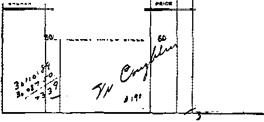

Contents
p CotriwI by J, T. Rutherford
Catholic Manton Uncensured by Rome
Coughlin’s Relation to the Church
tinder the Totalitarian Flag
The New Government
Jew-Catholic Boycott of a Barber
Confuses Religion and Christianity
British Comment
Extracts from “Death in Cellophane”
Published every other Wednesday by
WATCHTOWER BIBLE AND TRACT SOCIETY, INC.
117 Adama St., Brooklyn, N. Y„ U. S. A.
Editor Clayton J. Woodworth
Business Manager Nathan H. Knorr
Five Cents a Copy
|1 a year in the United States
11 .JS to Canada and all other countries
NOTICE TO SUBSCRIBERS
Remlttanessi For your own safety, remit by postal or express money order. When coin or currency Is lost in the ordinary mails, there Is no redress. Remittances from countries other than those named below may be made to the Brooklyn office, but only by International postal money order. ,
Receipt of a new or renewal pubscription will be acknowledged only when requested. Notice of Expiration le sent with the Journal one month before subscription expires. Please renew promptly to avoid loss of copies. Send chance of address direct to us rather than to the post office. Tour request should reach us at least two weeks before the date of Issue with which it is to taka effect. Send your old as well as the new address. Copies will not be forwarded by the post office to your new address unless extra postage la provided by you.
Published also in Afrikaans, Bohemian, Danish, Dutch, Finnish, French, German, Greek, Hungarian, Japanese, Norwegian, Polish, Portuguese, Spanish, Bwedisk, Ukrainian; also special Australian edition In English.
OFFICES FOR OTHER COUNTRIES
England 34 Craven Terrace, London, W. 2
Canada 40 Irwin Avenue, Toronto S, Ontario
Australia 7 Beresford Road, Strathiield. N.S.W. South Africa 623 Boston House, Cape Town
Entered as second-class matter at Brooklyn, N. T., under the Act of March 3, 1878,
Appetizers
Surely a Misunderstanding
Two ladies were sitting at an open window.
One was listening to a church choir practicing across the way.
The other was listening to the noise of the crickets. ~
The first one said, “How loudly they sing tonight!”
And the other one said, “Yes, and they tell me they do it with their hind legs.”—Labor,
Just Like That
Lawyer-k-Then you admit that you struck the defendant with malice aforethought?
Defendant, indignantly—You can’t mix me up like that. I’ve told you twice I hit him with a brick, and on purpose. There wasn’t no mallets nor nothin’ of the kind about it— just a plain brick like any gentleman would use.
The Popular Overture
Two dear old ladies were enjoying the music in the park. “I think that’s a waltz from Faust,” said one. “I thought i,t was a minuet from Mignon,” said the other. The first went over to what she thought was the board announcing the items. “We’re both wrong,” she said; “it’s a refrain from Spitting.”
Had Credentials
A member onee brought to his British club a visitor very tubby in figure and with a beetroot- complexion. Noticing him, one member asked another, “Who is that chap!”
“Colonel V----,” was the reply.
“Is he a full colonel ?”
“Generally,” was the reply.
Nice Manners
Mama—I was glad to see you remembered not to throw the orange peel on the floor of the bus, Johnny.
Johnny—Yes, mother, I remembered what you said about being neat. I put it in the pocket of the man in the next seat,—Labor Herald.
Oh, Sol
Mr, Stiles—Why, darling! What ails your eye? Why the bandage?
Mrs. Stiles—Don’t be ridiculous! This is my new hat.
'And in His name shall the nations hope.”—Matthew 12:21, A.R.V,
Volume XXI
IN THE preceding issue of this magazine the Scriptural proof was submitted that "‘religion is a snare” set by the Devil to eateh fearful men. It is written in End’s Word: “The fear of man bringeth a snare ; but whoso putteth his trust in Jehovah shall be safe.” (Proverbs 29 : 25, A.R.V.) The Bible, the Word of God, long ago foretol^i the present time as ‘times of peril, days of evil’. (2 Timothy 3:1) Satan, knowing that his time is short before the final battle at Armageddon, has brought great woes upon the peoples of earth, and these woes have constantly increased since 1918, (Revelation 12:12) These are, the days of which Jesus prophetically spoke when Tie said; ‘Men’s hearts failing them for fear and for looking after the things coming upon the earth.’ (Luke 21 : 26) Dictatorial rule in many of the nations has put fear in the hearts of the people of every nation, and they are looking for some way to safeguard their interests. Satan has taken advantage of his own wickedness and, through his earthly agents, is greatly increasing the fear of men.
Economic conditions that have come in the past few years have brought great fear upon the commercial men of the world. They fear that they cannot hold the power over men which commerce has given them. More recently their fear has increased by reason of the activities of the radical element, which threaten to destroy commerce and profiteering in the land. That fear of men or what men might bring to pass has led the commercial men right into the snare of the Devil, and their woyds now fully admit that fact. For the first time
Brooklyn, N. Y., Wednesday, October 4, 1939
Number 521
in the history of America commercial men insist that only religion can save the nation from disaster. In August, 1939, the Chamber of Commerce of the State of New York released to the public press their report, and the following is quoted from the public press, and the report, to wit: ••
“New York, Aug. 13- That religion should be an integral part of public education in the state’s schools is the first recommendation made by a special committee of the New York State Chamber of Commerce, appointed in February, 1938, to implire into the efficiency and economy of Hie educational system of the state. The committee warmed that if the nation does not uphold its religious foundation its whole structure will fail.”—Tin: Press.
The report of the committee says: “At tills time the state and nation find themselves in different conditions and with different needs from those which our country has ever heretofore known, and our educational system must be adjusted to meet these present-day needs. This committee is convinced that the great lack in our homes and in our national life, is the lack of true, simple religion.
“Tn these work-a-day, wrarring, strenuous times, we have been paying less and less attention to our religious convictions and feelings. Those convictions and feelings still exist, they are more important today than they ever were, and it is vital that in our education they be honored and promulgated rather than subordinated or excluded. If this nation does not maintain its religious foundation, its whole structure will fail.
“When we say religious, we do not mean any particular church or sect. We do not want: church differences mixed up in our schools; but we do want our scholars to appreciate and understand the importance of their following and making the most of the faith with which they are identified. We want them to know and to live by the basic rules of life which each will find in his own religion. Integrity, kindly human understanding*and true morals
^:;«re found in each, and those our scholars must ’’ (know and follow all through their lives if they would build high characters and play the part we need them to play in the future of this nation.
“The United States cannot have or maintain a right system unless it is based on true religious principles, and, therefore, in spite . of the fact that some hesitate to include religion in our educational program, we place it first.”
If that committee had advised the study of the Bible, and the faithful service of Jehovah God, and Christ Jesus, it would have done well. Contrary thereto the report completely ignores the Bible and no mention is made of Jehovah Gpd or Christ Jesus. Religion alone is stressed as the savior of the nation.
There are more than 200 religions practiced in America, and not one of those religions teaches or advocates God’s announced remedy for the ill effects upon the peoples of earth. Many of the religions are under the direct control of demons and honor the Devil himself openly. In fact, all religion is based upon the worship of demons or things pertaining to demons. In the face of the plain statement to this effect in the Bible, the aforesaid committee reports that religion is the hope of the nation. The Roman Catholic Hierarchy religious institution takes the lead in religious matters, and yet that institution has been diligent to keep the people in ignorance of the Bible, and that institution also continuously persecutes those who teach the Bible to the people. The Hierarchy publishes the fact that it? principal doctrines are based upon the traditions of men and not upon the Scriptures. That institution has been in operation for more than 1500 years and it has completely failed to instill in the people integrity and morality; and this every honest and sincere person knows. Adolf Hitler is a Catholic and a practitioner of religion, and his regime for several years has had the support of the Roman Catholic religious institution. It is well known that Hitler constantly consults the wicked spirits, and certainly Hitler and his religion are not teaching and cannot teach the youth morality, integrity, or even common decency.
Religion has always been the institution of persecution and crime. Jesus Christ was crucified by religionists, and all His disciples suffered persecution at the hands of religion
ists, and His true followers today likewise are persecuted. ,
The early settlers of America fled Europe because of religious persecution and settled in America, where they might worship God according to the dictates of their own conscience. The men who founded the United States government embodied in the fundamental law the provision guaranteeing the freedom of worship. The Roman Catholic religious institution has always fought against that part of the American Constitution. When Christians assemble peaceably to teach the Bible, and to worship God in spirit-and in truth, the religionists of the Hierarchy make a desperate attempt to break up such a-meet-ing of Christians and to prevent the study and teaching of the Bible. That kind of religion could never instill in the minds of American youth integrity, morality or respect for the law. ■
The report of the aforesaid committee of the Chamber of Commerce discloses that the members of that committee are either ignorant of the Bible or purposely ignoring it, and for the Bible teachings they substitute religion. The Bible is the Word of Almighty God and is absolutely opposed to religion, assigning as the reason therefor that religion originated with the Devil. Christianity means to obey God’s command, as set forth in the Bible. The Bible contains the word of God, and concerning it the Christian, Christ Jesus, said: “Thy word is truth.” (John 17:17) It is by the Word of God that the right principles of honesty, integrity and morality can be taught. The Bible is the only safe guide for man: “Thy word is a lamp unto my feet, and a light unto my path.” (Psalm 119; 105) It was written and given to man that those who love righteousness might be guided in the right way and learn true morality, honesty, and integrity, and that they might worship Jehovah in spirit and in truth.
The clergymen, who are the religious leaders, have not taught the people to have proper respect for the Word of God. They have-substituted the teachings of men for that which is contained in the Bible, God’s Word. The Lord Jesus Christ instructs all His followers to pray to Jehovah God: “Thy kingdom come ; thy will be done, on earth as in heaven.’ (Matthew 6:10) There is no religious institution or organization in America that teaches Hie people that God’s kingdom is the only hope of the human race. The committee of the Chamber of Commerce now urges the people to choose any kind of religion and teach it, and ignores the Bible. The word of God, as set forth in the Bible, makes it elear that religion is a snare of Satan and his associated demons. (Deuteronomy 7:16) Jesus emphasizes the fact that religion is of the Devil. (Matthew 15:1-9 ; John 8 : 42-44) The apostle Paul likewise denounced religion. (Galatians 1:1-16; Acts 26:3-20) The apostle makes known how God rescued him from religion, the Devil’s snare. He told the Athenians, who were practicing religion, that they were in fact worshiping demons: “Then Paul stood in the midst of Mars’ Hill, and said, Ye men of Athens, I perceive that in all things ye are too superstitious.” (Acts 17:22) Note other translations of this same text: ‘‘Men of Athens, I perceive that you are in every respect remarkably religious.” (Weymouth') “Paul, Standing in the midst of the Areopagus, said, Athenians, I perceive that in all things you are extremely devoted to tile worship of demons.” (Emphatic Diaglott) “Ye men of Athens! in every way, how unusually reverent of the demons ye are, I perceive.”—Rotherham.
Do the good people of America, who believe in honesty, integrity, and morality, desire to have their children taught religion, which is the worship of Satan and other demons, and whieji is against God and His kingdom by Christ Jesus ? Is the committee aforementioned wholly ignorant of the teachings of God’s Word,, or have they willingly ignored God’s Word to draw the people into the snare of the Devil ?
From the beginning of America this was considered a Christian nation. The Supreme Court, of the United States long ago so held. Now it appears that the clergymen, or religious leaders, have turned the people away from God and Christ, and have substituted religion entirely for the Scriptures. The clergymen, fearing that by preaching Christ and Him crucified they might not receive the honor which they desired, adopted religion instead of Christianity. They soon induced themselves to believe and led others to believe that religion and Christianity are the same thing; yet the Bible shows that religion is directly opposed to Christianity. The clergymen, desiring to increase their own power and influence and to enlarge their fields, solicited political and commercial men to join their institutions, and as an inducement they have made commercial men the chief ones in their flocks. .The commercial men were induced to embrace religion; and they feared to refuse : k to support it, because it might militate against J, their interest to do so. The clergymen and the •’T principal of their Hock, the political and com-mereial members, even as Gbd foretold through -His prophet, draw near to the Lord only by the words of their mouth, while their hearts are far removed from Him; and thus they are eaught in the snare of religion. (Isaiah 29:10-13) The love o# money and the power that money would bring was an added inducement for the commercial men to embrace religion and to associate themselves with the clergymen. In this connection mark the words written in the Bible relating to such: “But they that will be rich fall into temptation, and a snare, and into many foolish and hurtful lusts, which drown men in destruction and perdition. For the love of money is the root of all evil; which while some coveted after, they have erred from the faith, and pierced themselves through with many sorrows.”— 1 Timothy 6: 9,16.
It was an easy matter for men representing the commercial interests to be led into the religious snare. It is manifest that if they ever knew anything about the Word of God they have turned away from it, as the Scriptures further state concerning the charge, which the apostle gave to Timothy: “Charge them that are rich in this world, that they be not highminded, nor trust in uncertain riches, but in the living God, who giveth us richly all things to enjoy.”—1 Timothy 6:17.
Mark this: that the report of the Chamber of Commerce committee aforesaid has completely ignored God and His Word. ,
Now in this hour of stress upon the world, wdien all men aside from Christians are filled with fear, the Chamber of Commerce by its committee urges upon the people that they teach in their schools any kind of religion. Thus it is seen that the Devil is leading the nation into his snare.
Will the teaching of religion save the nation ? Far from it! There is one God Almighty, whose name is Jehovah. He is the Creator of heaven and earth, and He alone is the fountain of life. (Psalm 24:1; 36:9) He gives special warning to those who pretend to serve Him and who forget God and turn away from Him, and His warning is couched in these plain words: “The wicked shall be turned into ’ hell, and all the nations that forget God.’*
(Psalm 9:17) If the advice of the Chamber of Commerce committee is followed the whole nation will be taught to forget God and His Word.
Let the people keep in mind that Jesus Christ emphasized the importance of God’s kingdom as the dtily hope of humankind. There is no other hope. The people must now choose between the instruction given in the Bible and the advice given by religionists. Instead of religion’s planting any hope in the minds of men, and making any provision for their salvation, exactly the contrary is the result-
Jehovah God plainly directs the people to the only means of salvation and the only thing in which they can hope, and in this record He says: “Behold, my servant [Christ Jesus] whom I have chosen; my beloved in whom my soul is well pleased; 1 will put my spirit upon him, and he shall declare judgment to the nations. And in his name shall the nations hope.” —Matthew 12:18, 21, A..R.V,, margin.
The report of the committee of the Chamber of Commerce discloses the fact that the members thereof are victims of the snare. They are blind to the Word of God and are following their blind leaders, the clergymen of the religious institutions; and concerning this the Lord Jesus, directing His advice to the multitude, said that they should avoid the blind clergymen; ‘for the blind lead the blind, and both shall fall into the ditch .’-Matthew 15:14.
The American people, as well as the people of other nations, must now make their choice between religion and the kingdom of God by Christ Jesus. Instead of following religion, which leads into the snare of the Devil, let the people devote themselves to Christianity, which means learning and obeying the Word of God and worshiping Almighty God in spirit and in truth.
WHERE are the patriotic flag-wav-ers of the Catholic Press? Why not a few salvos for Hoover, Cahill and Murphy for ridding the bench of the greatest criminal and traitor of modern times? Martin T. Manton, Knight of St. Gregory the Great, of the Roman Catholic Church, was convicted in June, 1939, of accepting the sum of $183,000 for only six decisions handed down in the second highest court of the land, the United States Court of Appeals. There were a good many other cases which undoubtedly could have been used by the prosecutor, but six seemed enough to prove the crime. It was a difficult job to bring to justice such an arch-criminal, and, no doubt, had the investigators made any slips, Manton would have been on them like a tiger. But the work is accomplished; the courts of justice are cleansed of an influence more deadly than Communism. Now where are the professional patrioteers that are always lathering forth about little children who conscientiously refuse to salute a flag, and the self-constituted saviors who are advocating “Franco’s way” to save the country from the “Red Terror”? Speak up, Catholic Press, or forever after admit your hypocrisy.
It certainly takes a lot to cause a distinguished Catholic to be excommunicated if he 6
divides his spoil with the Hierarchy. Martin T. Manton has not been either excommunicated or even publicly censured. The people a.re left to surmise that the Catholic Church finds nothing blamable in defrauding and betraying the United States Government. AV hat is the reply to this from Rome’s American flag-wavers? (See “A Mighty Catholic in the ‘Pit’,” in Consolation Nos. 519, 520, 521.)
♦ Details from Rochester, N. Y,, show that it takes two hours forty minutes of standing up and sitting down and all kinds of religious things like that to make a first-class, or A No. 1, bishop of the Roman Catholic church. The one that was made over was the “Most Reverend” Walter A. Foery. The ones that made him over were the “Most Reverend” Emmet Walsh and the “Most Reverend” Francis Keogh. They did a good job, which ' was helped along by the presence of four archbishops, 14 bishops, 500 monsignori and priests, a pack of dogs and two eats. The result, according to the dispatch, was that:
He emerged at the end of a two hour and 40-mlnute ceremony as a spiritual descendant of the original apostles through the invocation of the Holy Ghost, the ministrations of his episcopal eonse-erators, and his own prayers and pledges.
Smoke-Screen (In Two Parts—Part 2)
WITH Armageddon almost within reach it is inevitable that the totalitarian monstrosity should begin to make its appearance in America, and many are wondering if Coughlin is the peculiar combination of Catholicism, craftiness, conceit, inconsistency and inflammatory oratorical power necessary to put it over.
One of the interesting features of the recent convention of Jehovah’s witnesses in New York city was the reading of the following letter to the conventioners. The letter, signed by Dr. Herbert M. Lauring, optometrist, of 707 West 171st St., New York, was addressed to Judge Rutherford, principal speaker at the convention, and was dated June 23, the opening day of the assembly. It said:
It was with great interest that I read the posters in the subway announcing the mass-meeting in Madison. Square Garden on June 25 at which you are to speak on ‘‘Government and Peace”.
No doubt you are familiar with the series of articles on “The Catholic Church in Politics” by L, Lehmann, published a few mouths ago in The New Republic, in which the author described the attempts of the Roman Church to deny religious liberty to Jehovah’s witnesses, the denomination of which you are the spiritual leader.
Let me say right now, that I am a Jew, and a firm believer in freedom of speech, religion, press, assembly and thought; therefore, when I read of the vile machinations of the priests to suppress your church, I became aroused to anger. I really am unfamiliar with your political and economic views, and am totally unaware of the nature of the remarks you will make in Madison Square Garden. I do not know whether you will be pro or antiadministration. However, you will have- an excellent opportunity at this great meeting to expose to the whole world the Catholic plot to undermine our democratic and representative form of government, and set up in this country a Papal-Fascist dictatorship to be ruled from Rome.
The leader of this insidious movement is Father Charles E. Coughlin, who is at this moment disseminating a wild and bestial anti-Semitism, having had wide success among certain Catholics. In Germany Father Coughlin is now a great hero, and at the recent meeting of Fritz Kuhn’s GermanAmerican Bund in Madison. Square Garden, his name was cheered to the echo.
If Father Coughlin were speaking only for himself, and not for his church, then it is quite apparent the priesthood should repudiate him from every Catholic pulpit in the nation. Yet what do we find? Certain official organs of the Catholic Church, like OCTOBER 4, 1939
te'
■C the Brooklyn Tablet, openly support him. Other prominent Catholic churchmen covertly give aid ? and comfort to him. The few scattered Catholics who have disavowed him have been like voices lost in the wilderness. When Cardinal Mundelein declared that Coughlin did not speak for his church, Father Coughlin in reply virtually told the Cardinal to go to blazes. Despite the fact that the Detroit priest is propagating a savage race-hatred, which will finally culminate in rivers of blood running through our streets, the priesthood, by its silence and concealed assistance, gives assent to his activities. _
Of approximately 140 million people in the United States, 115 million are Protestants, 21 million Catholics, and 4 million Jews. The great Protestant majority and the Jews believe in a parliamentary representative form of government and the Bill of Rights. The Catholic Hierarchy desires an authoritarian state, such as the Doll fuss-Catholic dictatorship in Austria, prior to Hitler.
Although the Jews are the target of Catholic anti-Semitism at this moment, they cannot very well lead an anti-Catholic campaign because of their small numbers, and because the enemy would then howl that the Jews are attacking Christianity, The audacity of the Catholic Church in presuming to speak for all Christianity is something which should enrage all Protestants. It is therefore the duty of the Protestant Church, of which your denomination is a branch, to assume the leadership of a great movement to shed light upon Catholic intrigues to subvert our government, and to make itself the state religion of our country. Once you give the lead, the Jews will follow.
Again may I emphasize that at Madison Square Garden, on Sunday, you will have a wonderful opportunity to fire the opening gun in a battle to preserve our institutions. I assure you that my friends and I will be present to hear you speak.
' •
Well Chosen Words ‘
Dr. Lauring’s words, above set forth, were well chosen, as those to whom it was read were mostly well aware, and as the readers of this magazine also well know. It is good to know that men of his intelligence are waking up to what is coming; for eome it surely will, Coughlin is a menace to America and to mankind.
Coughlin has occasionally been mentioned. in these columns, but not at any considerable length, because heretofore the space could be used to better purpose, hjit there is a reason ' at this time for giving this man some of the publicity he craves. It should be said at the outset that, like every Catholic priest, Cough- .
I' hn has beeri taught to disregard the Holy J $etiptures. Thus, in a sixteen-page lecture ? entitled “Following the Christ-child” there ■■ was not one Scripture citation. Holding the ' Scriptures themselves in light esteem, Coughlin and all other Roman Catholic priests hold in even less esteem those who place their sole reliance in the Word of God and not in the words of men.
It was thus a natural outlet for Coughlin’s energies that in 1927 he used his then considerable influence with radio station WJR, Detroit, to prevent, and he did prevent, the broadcasting at that time of Judge Rutherford’s address on “Freedom for the Peoples” over that station. That address, originating in Toronto, Canada, was taken for the largest number of radio stations assembled in a wire-connected chain ,up to that time, 53 stations. But for Coughlin.it would have been 54. He will be fully rewarded for that service when destroyed in Armageddon, but is entitled to some temporary compensation in advance. This is it.
In 1937, ten years later, in a letter to a correspondent in Massachusetts, he referred to the message of God’s kingdom, issuing from the pen of Judge Rutherford, in the following language:
The literature which you enclosed is only a very small part of the vicious material being circulated by Judge Rutherford and his followers, who for years have been notorious for their opposition to the Catholic Church.
. In the same letter he did his best to defend the doctrine of “Purgatory”, which anybody who has read the booklet Uncovered (probably referred to in the foregoing) knows has not a leg to stand upon.
•
Hurts Coughlin’s Business
The circulation of the truth on any Scriptural subject hurts Coughlin’s business, and that accounts for his hatred of Judge Rutherford and of Jehovah’s witnesses in general. He has a racket for enrolling, for the small sum of $1 each, the departed ones of Catholics, Protestants and Jews. If one is enrolled it is $1: if two, it is $2: if three, it is $3: if four, it is $4: if five, it is $5. It is making money just like that. What do the people get for their $1, $2, $3, $4 or $5? They get stung. That is the total return. - . •
The suggestion has been delicately advanced by some bf the priest’s crities that some of the hundreds of thousands of dollars flowing in to him should be used for direct relief of poverty. He does not seem to have thought of that. He is for Coughlin first, last and all the time.
It would be'hard to find anywhere a more thoroughly selfish man than this so-called “Christian priest”. The way the Yiddish newspaper of New York put it as respects his followers and Jehovah’s witnesses in Der Tog (The Day) of June 27, 1939, is translated as follows:
Give the Coughlinites liberty and they will know bow to appreciate it. They went to a convention of Christians, a group that is opposed to the pope, and caused a riot. At the meetings of Coughlinites no one is permitted to contradict by the use of a single word, but the Coughlinites themselves are not similarly particular concerning liberty of speech: they intruded Into the convention of another organization and started a riot. The followers of Hitler used exactly the same methods during their first years in Germany.
I have not yet heard him (Judge Rutherford) speak a single unkind word against Catholics, neither against those in this country nor in general. His lectures, therefore, truly come in the category of free speech. What is here involved are ideas, and freedom of speech is the basis of our democracy. You ought to see the list of persecutions which Jehovah’s witnesses are suffering in the various cities and towns of America. They are refused halls in which to hold their meetings, and, when they hold meetings, are assaulted; their children are expelled from schools; they have been tarred and feathered. This has been done by Catholics against the witnesses because they have denounced, not Catholics, nor even the pope, but the Papacy.
Norman Thomas Inquires
There is no use in inquiring of a gangster why he does what he does, but it is sometimes done, merely to get him on record, or to show that he dare not speak up like a man and tel! what his. motives are. Norman Thomas wrote Coughlin as lately as June 23, 1939, calling his attention to the fact that Coughlin asserts his own right to proclaim his ideas in the press and on the air but that his professed followers are leaders in denying or trying to deny those rights to others. He cited the civil liberties rally in Jersey City, not disturbed in any way by any except Coughlin’s followers, one of whom actually had the brass to loudly am nounce that he had the ri£ht to break up the meeting (so another account states). Thomas went on to say to Coughlin:
Now this Jersey City experience was not unique. Groups professing to be your followers have violently broken up outdoor meetings; I am reliably informed, in the Bronx, Brooklyn, Philadelphia
CONSOLATION
and elsewhere, quite in European black- and brownshirt style. I myself .witnessed the amazing exhibition of your followers at a hearing before the board of education in New York city in favor of closing the schoolhouses to discussions of “controversial issues”. Yet the same crowd pickets radio stations very noisily in your behalf, and does it in the name of free speech! These things are bad enough in themselves. They are worse in the light of their parallel to the rise of totalitarian dictators in Eurone.
Coughlin’s followers picketed ra-Jf di° station WMCA because that station refuses to carry his addresses. That was their right. But did rtSslfertiSia they have a right, after their twenty-third picketing, to pick a fight with those selling publications exposing Coughlin? Certainly not. But they did pick it, and it took 125 policemen to restore order on Broadway between Forty-eighth and Fiftieth streets on Sunday afternoon, May 21, 1939, because of that fact.
But when it came to Jehovah’s witnesses’ own convention in Madison Square Garden, June 25, 1939, and the Coughlinites had boasted beforehand that they would break up the convention, and marched on it with that end in view, Jehovah’s witnesses were most mightily and immediately and definitely interested. This is not the place to tell the story; it has appeared elsewhere. But the Coughlinites completely failed of their objective. They were put out as disturbers; and that is just what should be done in every assembly where they try to take away from others the rights which they claim for themselves, and which America so freely grants to them.
Brief Historical Sketch
Coughlin’s great-grandfather helped dig the Erie Canal; his grandfather was a Buffalo carpenter; his father was a church sexton; and Charles E, Coughlin was born in Hamilton, Ontario, October 25,1891. He was educated in a parochial school, graduated in Toronto University, and, in 1926, was sent to Royal Oak, Michigan, to act as priest for twenty families. A natural orator with a fine voice, and Catholic training in all the arts of rhetoric, he made a radio hit from the first with those who are weak in the head. One attack on Hoover brought him in 1,200,000 letters, and an attack on a big business group brought in 600,000. As a rabble-rouser he is in the same class with Hitler.
The resemblance to Hitler’s methods has
-
been noted by many. The source of Hitler’s wealth was his royalties on the book Mein v Kampf. A part of Coughlin’s income is derived from his biography and addresses, bound in one book and marketed for $3. Twelve of : Judge Rutherford’s wonderful books can be had for that money, and any one of them is worth a million times more to any person who wants to live through Armageddon than all the things Hitler and Coughlin have ever written or said or done in their whole lives, or than they will ever do.
Coughlin has his critics. The editor of The Churchman, a Protestant Episcopal publiea- ' tion, recently said of him that he is engaged in ‘dropping a torch into a world filled with high explosives’. Dr. E. Boyd Barrett, author of Rome Stoops to Conquer, said of him: “He is anti-labor, anti-Communist, and proFascist in the manner of his master, Pius XI, Like Pius, he is in an indirect way antiSemitic. . . . Father Coughlin has thus made himself the incomparable spokesman and sounding-board of tbe Holy Father.” Senator Bailey, of North Carolina, said of him:
There is nothing more sinister in our life right now than that Coughlin from the radio of the Shrine of the Little Flower . . . That voice stirs the depths of hate throughout the land of liberty, matches class against class, foments the fires of revolution, to crucify the American people upon his damnable ambition. Coughlin! Not “Father Coughlin” . . . When ... a minister of a church comes down into the political arena and goes out with his radio incendiarism to stir up the fountains of hate in a distressed land amongst a suffering people, I take it nothing amiss, and I make no apologies, but I will snatch the halo from his brow and throw it into the nearest spittoon, and then throw the spittoon into the gutter.
Coughlin’s Relation to the Church
In his letter to Judge Rutherford about Coughlin, it will be recalled that Dr. Lauring said: “The few scattered Catholics who have disavowed him have been like voices lost in the wilderness.” Al Smith called him a crackpot and Cardinal Mundelein said he is not a spokesman for the Catholic Church and his remarks should be considered only those of an individual. And “Reverend Father” James R. Cox of Pittsburgh (perhaps to shine up his own badly spattered escutcheon since he was arrested for misuse of the mails), referring to Coughlin, said: “A Catholic priest should be the last man to encourage rabble-rousing mob vengeance and mass hysteria.”
There is also a curious story dating back to the days when Merlin Aylesworth, then president of National Broadcasting Company, was one day reported as testifying that it was a Catholic group that vetoed the application of Coughlin to speak over his network. The next day the transcript of the official record did not show that he had said what the reporters the day previous had said that he said. The moral here seems to be that the transcript had been fixed to suit the exigencies of the case. Ayles-worth probably said it, but the Hierarchy did not wish to have it in the record that one of their greatest ‘heroes’ was not acceptable to them.
Probably Coughlin knows better how he stands with the Roman Hierarchy than does anybody else. He talks personally with Rome by radiophone, and his bishop is solidly behind him. The Vatican has never disavowed him. Coughlin has said publicly that Bishop Gallagher (now dead) and the pope were back of him. Gallagher said that the voice of Coughlin is the voice of God. His words were:
I pronounce Father Coughlin sound in doctrine, able in its application and interrelation. Freely I give him my imprimatur on his written word and freely I give my approval on the spoken word.
Throughout the pages of his paper occur again and again the words “Reverend Charles E. Coughlin, LL.D, (by permission of his Ecclesiastical Superior)”. Does this show any indication that the Hierarchy disapproves of this man?
When in June, 1938, there was issued from Royal Oak the statement over Coughlin’s signature, “I regret to state that on specific instructions from my superiors I am advised to withdraw from all public appearances until next November,” Coughlin claimed that the statement was sent out by one of his secretaries. Whatever the facts, it is certain that the Hierarchy is in close touch with the whole situation and very generally endorsing everything Coughlin does. .
When he resumed broadcasts January 10, 193ft after fourteen months off the air, Coughlin said, “I understand that my radio teaching is subject to the supervision of my immediate superior, the Archbishop of Detroit”: also, “I deplore the confusing agitation which has been fostered by Social Service.” Take out of these statements what you see fit.
The manager of radio station WJR, Detroit, has declared that Coughlin’s sermons have the approval of Archbishop Edward Mooney, of Detroit. He ought to know, and his name, Lew Fitzpatrick, suggests that he is of the same church. When the question was put direct to Mooney he gave a typical Hierarchy straddling answer by explaining that "Catholic Church authorities, in passing on writings or utterances, make a clear distinction between permission and approval”. The effect of such equivocations is to make honest, straightforward persons certain that the Catholic Church is back of Fascism, body" and soul, but doesn’t want the name of it until after the game is in the bag.
One of Coughlin’s stooge organizations is the so-called “Committee for the Defense of American Constitutional Rights”, You can judge of about how much value it would be in preserving American rights when you know that at one of its meetings the 6,000 persons present made the sign of the cross and were led in it by the “Reverend Father” Edward J. Higgins. He and they believe it right to murder persons teaching independently of the Roman Catholic church organization.
Converted to Fascism
Coughlin never stays converted to anything very long. What he really wants is dictatorial power, no matter how he gets it. A year or more ago he proposed the abandonment of the American form of government, and a Fascist system of representation in which the members of the House of Representatives would be elected according to class, as in Italy and Russia. Thus cotton farmers, steel workers, .coal miners, doctors, industrialists in each branch of industry, and all other classes, would incorporate and choose their own representatives. People are easier to control la chessboard”. Divide the country up into such classes (as it was in the Dark Ages, with its various guilds), and all that is necessary is to secretly control the leaders. Can you guess' who would do the controlling ? See Italy, Germany, Spain.
His magazine said last fall that the only unbiased source of truth is “Father” Coughlin. Do you remember the Italian statement, “Mussolini is always right”? Do you know that that is the way the German people speak of Hitler ? During the Ethiopian war Coughlin was all for Mussolini. That tells where his heart is. Mussolini reciprocates: the Italian newspaper Regime Fascist a praised him to the skies this very year, saying, “It is impossible for Italians not to express their sympathy with this apostle of Christianity.” . : : .
As Coughlin’s sympathies are with Mussolini and with Franco the Butcher, so they are also with the German outfit run by the man who murdered his best friend. The New York Post printed, in parallel columns, extracts from Coughlin’s talks and those of Goebbels, Hitler’s Jesuit-trained propaganda minister, showing their similarities. At the Nazi German American Bund meeting held at Madison Square Garden, New York, February 20,1939, the mention of Coughlin’s name was followed by the greatest ovation of the night. And Coughlin is alleged to have said of Hitler that he is the best Christian in the world.
Converted to Nazism
Not only are whole sections of Coughlin’s talks mere translations of Goebbel’s preachments to the German people, but he follows Hitler’s methods and principles, or lack of them. Thus he has learned that hate is a more powerful motive than love and works it to the limit. He has also learned the force that comes from the hammering reiteration of a few narrow ideas.
The Catholic magazine The Commonweal courageously referred to “his cavalier disregard for pertinent historical testimony, his insensitiveness to the consequences of his acts on German and Italian Jews [and] his all too pious acceptance of propaganda from a party whose Fuehrer proudly boasts his machine is based in huge lies”.
The Review of Reviews said: “It has not escaped the notice of observers that the general contour of his doctrine is oddly similar to that of National Socialism (Hitlerism). Although the Nazi dictator has abandoned virtually the whole of the program which he sold to the German people in 1930, the fact remains that it was excellent political copy.”
The St. Paul Pioneer Press said of him, “There is no longer any doubt as to what Father Coughlin is up to. This man, who burns with an unpriestly ambition for worldly power, has observed how Hitler arose out of the flames of prejudice; and he does not scruple to belie his sacred office by attempting here in America to arouse a race hatred against the Jews as a means of achieving his purpose. His unctuous disavowals of this purpose, while he utters falsehoods and misrepresentations, do not conceal his meaning, but bring it out more clearly. His technique is to retail Nazi propaganda, and then squirm out of responsibility by professing to deplore it.”
Dr. Harry F. Ward, of New York, chairman of the American League for Peace and Democracy, said of him, “He is constantly slipping over subtle defenses for Hitler and equally subtle suggestions that democracy is not working over here and that Fascism is working better over there” and that his goal is “a controlled totalitarian state in which the church is the ruling force”.
When Coughlin made his 14-month retirement from the air, in October, 1937, the New York Post said of him, “The more he said, the more clearly he was revealing himself as a sanctimonious stooge for special interests, a reactionary with more than a streak of Fascist ideas.”
It is well known in New York that there is an open alliance between Coughlin and the German Bund. On the day before the Bund meeting there was a Coughlin meeting in New York, and at that meeting literature and tickets for the Bund meeting were distributed. At the Bund meeting itself Coughlin was the hero of the day. r '
His Anti-Semitic Campaign
No man in public life ever told more lies or got caught at them more quickly than Coughlin did when he started his lying campaign against the Jews, and that right in the midst of their horrible sufferings in Germany. He published the so-called “Protocols of Zion”, which all now know to be forgeries. He charged that wealthy American Jews financed the Russian revolution; but Kerensky, one-time premier of Russia, immediately declared that there was not a single Jew in the first government established by the revolution. ■
He claimed that the American Secret Service had provided the above information, and that it was included in the unabridged British white paper which he had. Then the chief of the United States Secret Service, Frank' J. Wilson, denied that any such report had ever been made, and the British Government, both in London and in New York, produced copies of the original white paper and showed that no such statement had ever been made; and Coughlin had to admit that he did not have the paper, apd had never seen it.
Professor Johan Smeretenko convinced radio station WMCA that Coughlin had been broadcasting untruths, and they announced over the air that he had “unfortunately uttered eer-
tain mistakes of fact”—a nice way of telling the world what he is.
He mentioned Kuhn, Loeb & Co. as having had a share in fomenting the Russian revolu-tion; and that concern announced that it had never had any relations, financial or otherwise, with any government in Russia, Czarist, Kerensky or Communist. Then he supposedly quoted from a Jewish magazine to back up one of his statements; and it was seen that he misquoted the article.
Then he charged that present economic distress is due to the international Jewish bankers; and figures were produced showing, that only one Jewish banking firm, Kuhn, Loeb & Company, had participated in the loans to which he referred and their share was 2.88 percent of the total. In other words. Coughlin’s charge was 97.12 percent false and he is not a 100-pcreent liar. Neither is Hitler; it is not scientific.
Eddie Cantor, motion picture comedian, said of Coughlin, “Father Coughlin is a great orator, but I doubt that he has a sincere atom in his entire system.”
A Friend of Big Business
No person has panned Big Business harder than Coughlin, but he is a personal friend of W. R. Hearst, champion of Fascism in the United States. When he begs over the radio he gets results. When he talks, the people pay for it and are glad to do it. When he lectured in Madison Square Garden the crowd paid from 50 cents to $2 a head to hear his what some have called “poisonous and inflammatory economic and social nonsense”; yet his gang were not willing that Jehovah’s witnesses should have Judge Rutherford lecture to the public fkke, but had to try to break up the meeting.
At the very time Coughlin was blowing about stock market chicanery over the radio, his secretary, without his knowledge, so he says, invested $20,000 of his surplus funds in such a way as to rake in $100,000 net on the deal. It is a good thing Coughlin did not know about it, or he would have put in ten times as much.
He is a good cardplayer; sometimes plays until 12; 30 a.m.
His first church burned at exactly the right time. How odd! Catholic institutions that have served their time have a habit of burning - just when the insurance funds would come in best. This $30,000 shack went up just aS
12
Coughlin was moving into his million-dollar silo whore he now holds forth.
Coughlin says the laborer is on the side of the angels, but when he built his new shrine he refused to have anything to do with union labor, and the wagos he paid were 25 percent to 40 percent below trade union rates.
The Naw Republic stated that “the two most prominent purveyors of lies in the United States at present are Representative Dies and Father Coughlin”. Wonder why they said that.
In November, 1935, Coughlin stated: “At no time lias it been or will it be our desire to establish a so-called ‘third party’.” He established such a party within a year thereafter.
He is flexible in his convictions, having been a New Dealer three times. A friend of Roosevelt, he called the president a liar and a scab. A ‘lover of labor’, he denounced the CIO; and John W. Edelman, of that organization, said of him, “We recognize Father Coughlin as an unscrupulous man.” Nothing worse could be said of anybody.
He is conceited beyond the power of language; he has suggested bullets instead of ballots, to put his changing ideas across.
He said, “We Christians with a united front could go forth and do in one year in the United States what Franco accomplished in Spain.” His gang tried some of it, on a mild scale, in Madison Square Garden, June 25, 1939.
As showing that this person imagines he is America’s future Hitler, he said in his broadcast of January 1, 1939: “Let those who are with us reap the rewards ; let those who oppose us by their silence or their action suffer the consequences.” That is a typical Hitler threat.
See the Exhibits
Under the engaging title “Charles E. Coughlin: Priest, Gambler, Hypocrite” the Freethinkers of America, in their February (1939) liulleiin, published some reproductions from the Detroit Free Press showing some of this man’s financial transactions. These will be found on pages 18-19, and are well worth examination by anyone who is interested in the peculiar phenomenon holding forth at Royal Oak, Michigan. The fact that there are millions of Americans fallen so low as to pay any attention to a man of this type shows the desperately low moral and intellectual estate of vast numbers of the American people and their need of God’s government of peace, truth, honor and justice and love,— Elton Groves.
consolation
♦ Gradually caving in, the New York board of regents finally yielded what they hitherto refused, and now the clique that is out to control the schools and everything else in the state can arrange for the children to be excused from one of the precious thirty hours per week of schooling, so that they may receive religious instruction that “Mary is the mother of God”, and that God is so sore at humanity that unless somebody pays .his priests well most of them will have to cook for eternity. But if the money is forthcoming to the right bagman, then the poor apes can get to heaven, where they can enjoy the company of the Torquemadas, the Bloody Marys and the Borgias who succeeded in crashing the gate in ages gout!.
♦ A story in the New York Daily News is incomplete. It sets forth that a lawyer arranged with Monsignor John M. Kiely to dispose of “some worthless stock held by the priest”. The priest gave the lawyer $500 commission for putting through the deal, and the lawyer gave the priest his check for $2,600, the price of the stock. Something went ■wrong. Probably the lawyer could not find any sucker that would pay $2,600 for the “worthless stock held by the priest”. Anyway, the $2,600 eheek bounced back and the priest mourns his $500 paid to the lawyer, and at last reports was trying to get it back. The missing part of the story is a description of the stock, and who 'was to pay out $2,600 for what the News says was “worthless”.
♦ .The London Universe carries the interesting inf orm at ion that of the 18,000 persons on New York’s police force 12,000 are Roman Catholics; also that the chaplain of these 12,000, the “Reverend Father” Joseph A. McCaffrey, has been made a lieutenant colonel In the United States Army. Is it the fashion now for city chaplains to be made officers in the United States Army? Why? Also, and the items may have a relation to one another, there come reports from Washington that the Army is to be “vitalized” by removing 2,300 high-ranking officers from their jobs, and putting younger men in their places. One wonders if the complexion of the Army is to be altered to suit the ambitions of the Hierarchy.
♦ St. Patrick, it seems, was not a Roman Catholic, but is nevertheless the patron “saint” of the cathedral and archdiocese of New York. For that reason, on St. -Patrick’s day, March 17, 1939, Roman Catholics in New* York were permitted to eat meat, despite the faet that the day came on Friday. More religious foolishness, of no possible benefit to anybody except the dealers in meat.
Rachel McDowell, “religious” edi-^or ^le ^ew York Times, writer V °±' weepy stories about Pope Pius r Xi’s tenderness, etc., has broken
" loose again. This time she expatiated on the fact that the Roman Catholic Hierarchy, which hates American public schools worse than anything else, would stage an annual communion breakfast of a so-called “Board of Education’s Bureau of Attendance Catholic League” at which 2,000 guests would be present. While the principal speakers would be members of the Hierarchy, yet the president of the board of education of New York city was expected to be there in all his glory, to give apparent sanction to this un-American organization’s activities.
♦ Big religious excitement in Buffalo. First, the “Reverend Father” John J. Nash said that “there are certain enemies of religion today who are carrying on their propaganda in these United States against religion”, and, “These enemies are not outside the walls clamoring to get in; they are within our gates” and they “avowedly tell us that religion is an antidote, a soporific, invented by the priestcraft to quiet the people and prevent them from thinking”, and that these tactics are “only a prelude to a campaign of violence designed to destroy religion and the things that spring from it”, and that “they’re here on the plea of free speech”, and “I maintain that we must take action to halt this situation, or avow ourselves foolish before the whole civilized world”. Nash says that "every American is in favor of free speech”. He does not say who are these persons who now have free speech, but who should have it taken away, nor does he say who should do the taking.
There was more excitement when, at the same meeting, the ifMost Reverend” John A. Duffy made the mistake of saying that Exodus 20:7 is the second commandment. To be sure, it is the second commandment according to his religion, but not according to the Bible, as you can see for yourself if you refer to Exodus 20:4, where anybody may see that the second commandment is, “Thou shalt not make unto thee any graven image,” instead of "Thou shalt not take the name of Jehovah thy God in vain”. Bishop Duffy should throw his religion into the ash can. It is of no good. He should accept Christianity instead. Oh, oh, this is talking against religion, and Nash does not like things like that. Now isn’t that just too bad 1
“Mary the Mother of God” and ‘‘Baby Jesus” honored at Newburgh, N.Y., July 16,1939, and God dishonored by public idolatry, on Mount Carmel day.
Hierarchy Sore on Spanish Veterans ♦ When the 149 members of the Abraham Lincoln Brigade of the Spanish Republic returned from Spain they wanted to place a wreath on what is called the Eternal Light in Madison Square Park, but the Hierarchy was sore at the idea, and so Lieutenant Charles Maura of the New York police department, and Terrence Cusick, one of the employees of the New York City Department of Parks, forbade them to do it. In order not to offend the Hierarchy, the wreath, bearing the title “In memory of those who died for democracy”, was placed outside the railing surrounding the base. Another great victory for Franco, the pope and the Devil.
♦ A certain physician received a series of requests to donate money to the building of a pew Catholic hospital. At length he gave up $100. Then he received a request to purchase tickets at $10 a ticket. Becoming shy of sending more money, he received another notice to purchase tickets, stating that "this is the second request”. Then he received an invitation to a dinner at $1.50 a plate; this was also ignored. Then a committee called the physician’s nurse and told her to remind the doctor that he had not ordered his tickets, and that if he found it impossible to attend the dinner, to please send the money or a subscription anyway, and lastly the same request was made by mail. The physician’s wife wants to know—
If all outside of the Catholic church are Communists, Reds and heathen, why do they accept or even want the money which pon-Catholics have?
♦ The Scripture declaration is that “the dead know not any thing” (Ecclesiastes 9:5), and that when a person dies “his thoughts perish” (Psalm 146:4),which fully explains why people working the worst of all rackets • do all possible to discourage the common , people from possess
ing the Scriptures, or using them. Martin J. Blake, C.M., Our Lady of Angels Novena, Niagara University, N. Y., writes as follows, and you can either believe what he says or believe the Scriptures. Take your choice. It is a free country, and if you wish to believe something that is not true, and that will never do you or anybody else the least bit of good here or hereafter, just go right ahead and support the racket:
Hopefully and expectantly the Souls in Purgatory look to us for help. Because we do not see them suffer, shall our hearts remain cold? Because we do not hear them plead, shall our ears remain deaf?
The big idea is to come across with a dollar. You can imagine who gets the dollar, and how much good it will do to people, that are asleep iri death.
♦ The monks of the Trappist Monastery of Mount St. Bernard, England, do not generally indulge in talking. Only with permission and on special occasions do they engage in conversation. Such a special occasion arose when their new church was on show and many visitors came to look it over, including numerous girls (wearing trousers, slacks and shorts) who wandered all over the monastery grounds. The monks generally consider conversation a sin (and maybe it is in their case), but on this occasion the salutary association with normal people made things all right. The monks could talk to the ladies without sinning.
♦ The Roman Hierarchy is often embarrassed in its attempts to place its own men in the key positions of the world, and so compromise is frequently necessary. It is therefore of interest that the new British ambassador to the United States is not an out-and-out Roman Catholic, as is the American ambassador to Britain. The most that can be said, in his case, is that his father was a Roman Catholic. He is, however, an admirer of Hitler and will be very useful to both the Hierarchy and Hitler in his new position. He thinks Britain should pay the U, S. what it has borrowed, and is not at all wrong in his view that this would put Britain in a mighty lot better standing in this country than it now occupies.
♦ An ad soliciting funds for the building of the Liverpool Metropolitian Cathedral (Catholic) states that those who donate £1 will have their names subscribed in a book of remembrance. It quotes Malachi 3:16, but examination of the verse fails to reveal any mention of the money consideration. A mere oversight, perhaps. The ad further states that “for all time this book will remain within the precincts of a Glorious Temple”. In these days of bombs and air raids it is best not to be too sure of that.
♦ Noyes’ book Voltaire has been condemned by the Vatican, but as they gave no explanation of their condemnation, he went ahead with its publication anyway. Seeing they could not bluff him, the Hierarchy compromised, and a preface explaining the “difficulty” makes the book acceptable. It wouldn’t do to antagonize the British reading public at this juncture.
♦ No matter how much honest people may hold its lack of principle in utter contempt, there are few who, if they knew the facts, could withhold a measure of admiration (Rev. 17; 6) at the skillful manner in which the Roman Hierarchy used the pictures of victims slain by Franco’s hordes to obtain money for Franco’s cause. Sailing under a name as misleading as its cause, and by the use of 3,000 passes, the so-called “American Committee for Spanish Relief” managed to get 12,000 people to attend their pageant in Madison Square Garden. They had previously advertised widely that 20,000 would be there. Is America’s capacity for propaganda shrinking?
♦ Reporters were embarrassed when suddenly, on an evening in midsummer, 200 boys at the New York Catholic Protectory, 1900 East Tremont Avenue, Bronx, began shouting and smashing windows, declaring that they were whipped frequently and denied the freedom to which they were entitled. It seems that somebody sent for the police and the reporters could not understand why Deputy Inspector John S. Burke refused to give them any information about the affair.
One of the boys tossed out a note reading as follows:
At 5:30 a boy got hit for nothing he do so we . took matters into our own hands this place is worse than singsing the brothers dogs eat better stuff than us so please print this we got a week in the cell full of rats eat hard bread and water.
♦ A new form of ouija board, called a liedetector, may soon come into use. It is the invention of the “Reverend Father” Summers of the Roman Catholic Fordham University, New York, and was written up at length by John McClain in the New York Journal and American. The machine is supposed to be able to distinguish between different kinds of fear. Its evidence has already been accepted in one of the New York courts. The record is that “the defendant was declared not guilty almost solely because of the mute testimony of the device”. If it can make a guilty man innocent, it can do the reverse, and opens up fine prospects of a new line of torture for those who seek to maintain their integrity in this evil day.
♦ There is nothing like getting your geography lesson right if you wish to shorten your days in “Purgatory” or some other place like it that does not exist. That seems to be the drift of Cardinal Mundelein’s order that Roman Catholics of his diocese might eat all the meat they wished on Friday, December 31, 1937, but only if they , stayed within the diocese. On one side of the diocese border roast ham was O.K.; on the other side it was fish or “Purgatory”. If the man was just on the line when he ate, then it al] depended on which side of him or which end of him was on the diocese'side of the line. Suppose his head was in the diocese and the rest of his body outside, he could eat ham ; but if his head was over the line and his body in the diocese, he must eat fish. It would make a big difference to God. And it helps lots in studying geography.
♦ The business of making a “saint” out of Mother Cabrini progresses. It will cost lots of money; it always does. Baek in the days of the apostles anybody could be a saint, but the apostles were simple persons. They never even thought of the possibilities of graft in the saint business. It is not denied that Mother Cabrini founded seven convents; nobody has to be a saint to do that. And she was of the Lombard nobility, and that doesn’t make a saint out of anybody, nor does even her residence in Chicago. What will make her a “saint”, and the only thing that will do it, is that enough persons come across with the coin to make the performance worth while. A show can’t be run for nothing.
♦ On his death it was brought to light that the “Reverend Father” William R. Hayes, pastor of St. Mary’s Roman Catholic Church, Newburgh, N. Y., had been decently married for two years before his death. The facts came out when it was learned that all but $1 of this $80,000 estate was left to his wife. The natives of Virginia Beach, Va., did not know that he was a Roman Catholic priest, and the Roman Catholics of Newburgh, N. Y., did not know he was married, and so he managed to get along. As he left nothing for the repose of his soul in “purgatory”, it is likely that he was familiar with the Bible truth that the dead are dead and that there is no sueh place as “purgatory”.
♦ The Catholic press makes no effort to conceal that it is pro-Fascist. It well knows that it is the heart and soul of the whole totalitarian scheme of government. The London Catholic Herald ran a feature article by J. L. Bene-venisti (probably a priest) in which the theme, set in an artistic box in the center of the story, was the catch-phrase:
Totalitarian governments are carrying out measures which, democracies carefully avoid suggesting, could be utilised all over the world.
♦ How they love to smear on the big figures. The London Catholic Herald said of the four-hour ceremony of the pope putting on his three-story hat that “it is estimated that 500,000,000 people were listening”. The next inquiry is, Who made the estimate? and the answer is that it must have been somebody that is insane; for no person of sound sense would imagine it for a minute. That is more than one-fourth of all the people in the world, and they speak 3,500 languages.
♦ In Pierre van Faassen’s Days of Our Years, concerning conditions as he saw them in Spain, occurs (on page 425) the following paragraph : '
I had seen religious processions in 1931, one in Seville and one in Saragossa, still another in Caceres, a small town where there were thirty-eight monasteries, the one standing next to the other in an endless row like the cathedrals in the Kremlin of Moscow, processions carrying a golden-diademed statue of the Virgin which was literally buried under jewels, diamonds, rubies, smaragds and other precious stones, including decorations and stars of the kind worn by victorious generals and diplomats on their gala uniforms. Priests in golden vestments walked under baldachins of purple and damask, swinging censers of silver and filigree, preceded by banners of silk and jewel-studded croziers, surrounded by laee-wearing acolytes, train bearers and boys in violet soutanes carrying glittering boxes containing relies, followed by a monstrance of a value of three million pesetas that burst upon the eye like a cluster of diamonds. And looking on, pouring from the putrid alleys of the Triana quarter in Seville, and saluting the Retd Presence by dropping on their knees, I had seen the hollow-cheeked, ragged, barefooted Magdalenes, the disheveled women, the unkempt hungry children, the very flesh and blood of Jesus. ■
To the extent of the Vatican pig’s ability CopditioDs like these prevail or have prevailed throughout “Christendom”, and it is the pig’s desire and intent to establish them everywhere, including Britain and America.
A book, written by a judge of one of the courts of Mexico (which book is now in possession of the president of the Watchtower Bible and Tract Society), states that for each year, over a period of years prior to the smashing of the Hierarchy there, the poor people of Mexico contributed 30 million dollars in gold to the Vatican. If poor Mexico did that, what do rich United States, Canada and other countries do?
The cartoonist speaks in symbol:
' Scene One: Hitler, Mussolini and Franco have all’the political aid they can get out of the old sow, and they begin to look for more fertile fields.
Scene Two: Stalin joins the other three. Together they have cleaned up the Jews. They look inquiringly at each other and Stalin points to the Vatican, and away they go.
/ Scene Three : The rooting progresses, and the gold treasure is uncovered which the totalitarians expect to use for further conquest of territory. The sow’s dream is gone, and she weeps bitterly.
Scene Four: The spoil is divided, and they get into a row because the division is not equal, and they fight it out among themselves, destroying each other. This follows the desolation of the “old whore”; “for God hath put [it] in their hearts to fulfill his will.”—Revelation 17:17.
(To be continued)
Above are presented photostatic copies o£ three sales invoices, through which Father Coughlin! the radio priest, disposed of stock purchased through the National Bank of Commerce, later absorbed by the Guardian Detroit Union Group, Inc., and operated as a branch of the Guardian National Bank of Commerce. Invoice} show the sales made through Nicol-Ford & Co., brokers.
Time and again in hit radio addrtwesj Father Charles E. Coughlin has de red in the tones of a prophet <rf doouQi about "throwing the money dangers oui1 of the temple” and using such colorful and poetic phrases about people and poli-cies he didn't like as "seeking the flesh-pots of Egypt,” “a crap game played with other people's money," "his torch of greed to the edifice of cur prosperity/' etc, etc. To the simple minded, his denunciations made them believe that he must be epitome of virtue, self-denial with no interest save that of suffering, enslaved humanity.
But other humble people who, however, knew (heir Shakespeare well became a little suspicious of all thia nylat —“methinks the man doth protest too much." They started a little investigation of the good father’s—not private life —hut private bank account*. The results were more startling than they could have imagined.
This hypocritical priest who was so-vitriolic against stock-market gamblers, bankers and others in that category was playing the stock-market himself. The nickels, dimes and dollar bills that he collected from his gullible listeners, ostensibly for the Shrine of the Little Flower, were tossed as so much duckot feed in the greedy Jaws of the Stock-market exchange and as quickly devoured.
On this page we reprint from the Detroit Free Press of March 29, 1933, some photostatic copies of Coughlin's bank and I stock-market accounts which show Irrefutably his gambling activities.
'A Crap Game Played with Other People's Money’
(fjcrrjf |r» Xd^fu •/
W».A211B0

Fer Delivery_ 3-Z1-&__________
FOUSMT for yeur sccourL and risk uccrdini to the iulti of the Beaton, Nev York Of Chieaga Etchings*
Here ls a photostatic copy of the purchase order for SOQ shares of Stock in the Kelsey-Hayes Wheel Corp., executed by the National Bank of Commerce (now the Guardian National Bank of Commerce), for Father Charles E. Coughlin. The stock was later sold through the Nicol-Ford brokerage house, and iu the transaction the radio priest lost hi excess of
■RDKIR
DISCH iPTl&N
KELSEY MAYES WXEL
|
amount |
•ar |
COMM* |
NVT AMOUNT |
|
yoooo w |
87 30 |
50007 so v*sy |
♦ The initials “S.J ” stand for “Society of Jesus (Jesuits)” and for Social Justice, the organ of “Father” Coughlin. Probably the one “S.J.” furnishes the copy for the other.
“Father” Coughlin tells of the alleged aims of his paper. He says:
Social justice has specified principles. [Don’t ask who specified them.] First, it is Christian [anti-Jewish]. Second, it is social [devoted to gambling on a colossal scale with the money entrusted to it by America’s biggest and most trusting bunch of suckersj. Thirdly, it is active [as shown by the disorders and threats that have accompanied its spread in New York city]. And
from Father Coughlin's Radio Address of Sunday}
DIRECT LIABILITY
Wi __ _ UI1C E COUGKLK
Lt*C 0/ C»p/r^
4ppjf££f _ Il UI W I waftMum____________________ , ,, ——
|
*>«*»> |
•4 |
—• I ........ |
0l> |
s»n rxin- |
rnji-\ |
OtWTl |
- K*a | |
|
'UH' *qr ft |
C2OO21 |
I $&0 $M K£k,$£Y HAYES WfEL COUP |
,UN 1 1 |
10 icY l.O |
10 MT $0 | |||
|
IQ MT M |
JUV 1 1 |
CllTi |
C:oo0 MO M NELfEY WAVES WHEEL CORP |
SEP 3 |
SEP * |
il Bar sa |
10 587 50 | |
|
10 5»T 5? |
SEP + |
C2J31 |
C2J3Z6 500 SH KEufiET HAUS WHEEL CCffP |
oe; 2 |
0*C 3 |
J* BBT B>0 |
10 SB? so |
10 58? 50 |
|
r jriftft |
11 r.i f | |||||||
|
" y 19? ft! | ||||||||
|
11 **9 SO |
& a |
C2442 |
10O$H PaCKA» MOfCW CAR CO C0H |
JAN 31 |
FEH 4 |
1 125 AC |
13 fii 3G | |
|
U «5 30 |
MOV I |
CJlJtj PAffY PAYiSM |
2 OC0 00 |
1! 12$ 30 | ||||
|
t) BZ5 30 |
W- |
CHrri |
C2J319 588 W nEL5£Y KlfES mME£L COUP |
luff 3 |
UAR 4 |
0 JjflT 5C, |
1 $07 50 |
1? 025 30 |
|
11 Ui » |
UAH 9 |
CZS>5 |
ifiioA rso & <Enrws*fES mtcCTW |
APR 10 |
i-l+LU |
t- I nz « |
875 30 | |
|
11 gt5 30 |
Ft 5 4 |
C25&& |
CJ4429 1(JO PACKARp KOTOR CAR CO CQM |
k*¥ i |
tan ?7 |
i tzs n |
1 125 IG |
11 125 3E |
|
H flS M |
Mff 4 |
Clftl 3 |
C24£|tB 568 6H KfLSET HAY15 ”H<IL WJtP |
JUNE 2 |
I4R 7 |
* 5BT 90 |
1 517 $q |
11 £2£ 30 |
|
11 (25 30 |
WH 7 |
CZ(,t3$ «WT 10 HLCNLAW PAR* TRUST CO |
8 517 50 |
3 23T 40 | ||||
|
02 5191 PART PAYWVF |
14 Z 03 |
1 149 9T | ||||||
|
1 <5* 9? |
APR 'll |
Ci 563 |
icism m mur *uyk *me(l co |
HAY 7 |
ARfl 24 |
1 901 21 |
1 059 |T |
1 Hl 21 |
|
i wi a? |
APR 24 |
C264i| |
1 HT 21 |
CO | ||||
t
The discount liability kdger sheet uC father Cough* lin’s brokerage account with the National Bank o£ Commerce (now the Guardian National). It covers transactions in Kelsey-Hayes and Packard stocks covering a period cf more than a year. Funds deposited to the credit of the League of the Little Flower account were transferred to meet payments upon some of these stack transactions.
The items on these pages are taken from' 77ie Detroil Free Press of March 29, 1933.
Here appears a photostatic copy of • Father Charles E. Coughlin’s daily balances in the National Bank of Commerce, succeeded by the Guardian National Bank of Commerce, for the period indicated. On March 19, . । —>-
1931, he withdrew $40,084.04. In the photostatm copy the initial numeral "41J does not appear in the left-hand column, third figure from the bottom, which erroneously reach "0.084,04”
‘Smart Money’
From Fa ill er Coughlin's Radio /Itfdri’js of Sunday)
|
11 1 1 11 " *■ — .....— | ||||
|
___CpnzMtn. |
CheS. E, |
*o |
/list. | |
|
•h^-_______________________ | ||||
|
lf*’Tk<P****JJ |
6(»pHT» |
In'fcHli |
0*TT m XM£» | |
|
1,46 0.3 C |
WA<1 2 3 |
3,0 111,46 3.6 IfcX 2,8 63 6 1* | ||
|
1,4 Q 0.0 ( |
APR 2 □ w | |||
|
1,4 0 0.0 0 - |
2.0 0 0.0 Z |
APR AfrR 3 7'K | ||
|
4,0 o o o c |
UAY |
7,4 6 3.6 1 >/ 7,4 6 4 5 4 -JL. 6, 6 & 4 .6 4 | ||
|
8 C 0.0 0 ’ |
7 10 - |
JUW LIN JUN J’W | ||
|
2, 6 4 6.0 0 * |
JUN JJM |
4,0 1 8 6 4>T*' | ||
|
2,60 0.0 0 - |
1,2 1 2.6 4 | |||
|
2.2 0 0,0 0 - |
JUL Sr» |
9 8 1.3 6 os | ||
|
1,0 0 0,0 o |
JUL |
16 6 4* | ||
|
D£« I IN |
i o, o o o .o a |
.18 |
ate UN huff 4 90 |
1e B2 1 O.tft 8.8 2 * |
|
5,0 0 0.0 c |
APR HOC |
1 5,0 1 8.8 2 • | ||
|
I 5.1 4 3.3 3 |
APR 1 <«J |
30.1 62,1 5 *’ | ||
|
!,?9 3-p C |
NAY t D«X |
31,9 5 54 5 ♦ | ||
|
JLN 1 IN |
75 |
2 7 |
JUN 1JN |
3 2,0 3 042U |
|
6.6 5450 |
UUN 0 >5C |
3^684.9 2 « | ||
|
' 6,6 5 4.5 ri - |
JU« 7<9C |
3 2,0 3 0.4 2 -fr | ||
|
2 3,4 8 5.7 £ |
JUN 1 |
5 5,51 6.2 0 1* | ||
|
8.C9Z I 9 - |
JUN 1 ow |
2 7,4 2 3.9 1 * | ||
|
2.000.00- |
JUL H’S |
1 5,4 2 3.91 » | ||
|
5,0 OO.O 0 - |
wv soo |
1CX 4 2 3.9 1 « | ||
|
1 KG 1 1 |
J 2 3 |
23 4 |
PEG 1 IN |
1 0,6 5 6.2 5 » |
|
>0,000.00 |
JAN 2131 |
40656^5* | ||
|
0,0 a 4.0 4 - |
UAR 1 9*31 |
5 72 21 * | ||
|
JUN LIN |
e 4 |
21 |
|HJN 1 1T4 |
6 5 6.4 2 « |
|
DEC 1 1N |
9 ,B |
t B£ |
' 1 1H |
6 66.2 6 * |
|
JUN liN |
9« |
'9 |
IUN UN |
676.25V |
|
66626- |
duw m |
9.9 9* | ||
|
m- |
JUN 8*5 |
.00 * | ||
fourthly, it is militant [eager to pick a fight on peaceable and decent people engaged in minding their own affairs, as was attempted at Madison Square Garden, on June 25, 1039J.
Coughlin prophesies of himself thusly:
If I threw away and renounced my faith 1 would surround rayself with the most adroit highjackers, learn every trick of the highest- bank and stock manipulations, avail mysel (' of the laws under which to hide my own crimes, create a smoke-screen to throw into the eyes of men, and—believe me—-I would become the world’s champion crook.
Witnessing to Prisoners
Pupils at Kingdom School, Westgate-on-Kent, England
♦ We are having grand privileges of witnessing to prisoners in a prison here in the mountains where 70 percent of the prisoners are Catholics. When we asked for a permit we Were sent to the Protestant chaplain, which we considered evidence of the Lord’s leading. We have now had the sound-car within the walls twice, and have run the lectures “Fascism or Freedom" and “Fill the Earth”. Many of the prisoners came up after the lectures, to get some literature, and we gave out some 150 pieces, and put 10 bound books in the prison library.
One of the prisoners approached the car and said:
I want to congratulate you people for having the courage to do and say the things you have done and said here today, and not only here, but everywhere. I have never seen anything like it elsewhere. Wherever you people are located, you always boldly express your belief without fear. That takes courage. The others don’t have it. I guess you are the only people in the world that have the courage to declare your doctrines fearlessly.
Another peculiarly interesting thing was the conduct of a man whq seemed to us at first to be showing an uncanny interest in what we were doing. We thought he might be intending mischief among his fellows, but were pleasantly surprised, when the lecture was over, to find that he knows something of the Scriptures, and was bearing up the standard of truth to his comrades. ■
We are thankful to Jehovah for the privilege of carrying the message of freedom and life to the men inside these walls.—L. M. Feaster, zone servant.
♦ The Northwest Review (Catholic) is very much mistaken in thinking it can get Catholic people to do what Jehovah’s witnesses are doing, It cannot he done. Only an overwhelming love for the Creator and a determination to do His will at all costs would ever persuade any to do what the Review contemplates when
it says: .....
If Jehovah’s witnesses can push their campaign we can be just as aggressive. They are not satisfied to stand outside the door of the home. They go in to the family and teach their doctrines to children and adults. They send teachers and missionaries into schools, colleges, factories, lumber camps and into every nook and corner of society.
At the County Seat ♦ At the county seat of this county the leading citizen of importance in industry was called upon. Our mission was explained, but not without a barrage of questions: “This costs a lot of money; who is paying you? Are you Com-
munists!" We explained that we are not, but are exposing
Fascism in this country; whereupon the gentleman exploded with the statement, “The Fascists are doing a better job in Europe than we are here. I would rather see Fascism in this country than to have things as they are now.” This man owns half the town, together with the cotton mills. Fascism would be a convenient way for him to settle his labor troubles.
The postmaster was visited, but after we left his office he stepped out and called us back. He said, “I see here something about the Catholic Church. Would you give me your name and address ?” Why, certainly we would; but just why did he want such information! He explained in brief that it was a regulation that whenever someone left literature he was to get their names. We remarked that this had all the earmarks of Fascism, and wished to know by whom and why such an order had been given. He became very flustered and said that the information was for his own knowledge, thus contradicting himself in less than half a minute. : ; ':
One of the leading lawyers was visited. Haying found out who we are he became very friendly, and, even though his office was full, gave us every attention, saying, “I know your work: you are doing the best work in the world; keep it up.” Later we were told that thfs same lawyer, speaking to a clergyman, asked him who was going to take care of hell after the Deyil is destroyed. The clergyman was unable to answer, but was quickly instructed by our lawyer friend that the clergy would get the job.—A. G. Hill, pioneer.
♦ The other day Alice came back to the car and said:
Remember the lady who wrote to Consolation about the canaries and dogs, and how they behaved on hearing Judge Rutherford’s speech? Well, I j ust had two deer come out on the edge of the clearing by. the log cabin, and stand and listen. The owner said they were wild deer.
A sign of the times in Tennessee
We are working almost entirely in rural territory, with lots of driving on steep, narrow mountain roads, and many poor people. There are very few towns, and what there are are very small, yet the increase in the “great multitude” seems to appear, In this rural, mountain territory we have .encouraged the people to secure the Model Study booklet, with Uncovered and Protection, so as to continue their studying when we are gone. This is a very poor country, but Alice and I are doing pretty well. After all, our main object is to advertise the Kingdom, and we are doing that.
We have been living in bunkhouses on ranches, in boxcar-houses, tourist camps. Hope to get a little trailer-house soon.
We have come in contact with a movement, .“Mankind United,” which claims to be working with the Watchtower. [No connection with the work here.—Ed.]—Jean Barnes.
♦ My little girl is five years old, and attends the kindergarten. A few days ago the teacher had the class stand for flag salute. Tr----
began to cry. When asked what was the mat-OCTOBER 4, 1839
ter she answered: “I do not want to salute the flag.” The teacher had her sit down, and later called her into another room, asking why she did not wish to salute the flag. Tr---- an
swered, “I do not want to be on the Devil’s side, because God is going to destroy all that are on the Devil’s side. If I salute the flag I’ll be on the Devil’s side.” The teacher asked, “What church does your mother go to?” Tr----answered, “She doesn’t go to church;
she goes to a class where she studies the Bible so she’ll know how to be on God’s side. And my Aunt B---- plays records for people so
they can be on God’s side, too.” The teacher kissed her and told her to just stand still but not to say anything then.
Several days later Tr---- took Protec
tion to the teacher, asking her to read it all and look up the scriptures, too. At this point I entered. The teacher said: “Tr---- was just
showing me her little book. You know the funniest thing happened the other day
during flag salute, etc. What religion do you belong to?” I then explained that we did not belong to a religion; that there was a vast difference between religion and Christianity. I told her that the booklet Protection explains the difference between religion and Christianity, and asked if she wished to read it. She answered: “I should like to very much.” I told her that I would have to hurry on, as I had left my aunt playing a series of records, and must pick her up. The teacher then said: “Oh yes, Tr----■ was telling me about them.
Just what are they?” I then explained and asked her if she wished to hear them. She said: “Yes, as soon as I have read the booklet I’ll let you know when I can hear them.”—A mother in Kansas.
Humphrey Believes in Freedom of Speech ♦ Henry Humphrey, general manager, Texarkana Gazette, believes in freedom of speech for the Catholic Hierarchy, but not for Jehovah’s witnesses. In his paper he says, in an editorial in which he makes a bold stand for equal rights of all to the protection of the
government: "All the people, and not a single group,” should receive the government's protection in their rights. And then, as the manager of radio station KCMC, he refused to allow Jehovah’s witnesses to broadcast the “Exposed” series of lectures, subsequently run in this magazine. In other words, the Hierarchy has rights which must be recognized and respected, but Jehovah’s witnesses have no rights whatever. Consistency, thou art a jewel.
♦ For ten years I was a popular and well-liked barber in a wholesale shoe district. Having my own shop, at 141 W. Broadway, New York city, I was glad to advertise the Kingdom and made mention of it whenever opportunity presented itself. During the Cure booklet campaign a Jewish relative of one of the shoe concerns (Mr. Lapidus, of the A, S. Beck Shoe Co.) mentioned that one of Jehovah’s witnesses had called upon him and placed the book A’ n e m i e.?
Information marchers, Sao Paulo, Brazil, ready for action
with him. At that time he seemed very pleased to have obtained it, but a week later came in, hot and bothered, complaining of the statement on page 281 which partly reads, “Amongst her instruments that she uses are ultraselflsh men called Jews who only look for selfish gain, and who therefore readily yield to and join with the Hierarchy in any unrighteous schemes.”
I endeavored to explain, but he would not have it so, said he would have some one else to read it, and just then there “happened” to come in a Catholic associate, an executive in the same shoe concern. He read the paragraphs, became even more infuriated, slammed the book down, and said he would not patronize a place that supported such sentiments. That same day the workers of the shoe concern were called together, and told to boycott my shop. Not content with cutting off my trade from their own employees, they sent out to surrounding shoe jobbers, asking them and their workers to boycott me. I tried to stick it out, and called on some parties to use their influence to alleviate the situation, but finally had to'sell out. The partnership in boycott between the Jews and Catholics accomplished its purpose. Now I have work in another line, with shorter hours, and am able to put in more time in the Kingdom work, for which I am grateful to the (liver of every good and perfect gift.—Joseph La Placa.
♦ I am an Indian, living on one of the Indian reservations. As a follower of Jehovah God I feci that I ought to express my feelings. I have read a good many of Judge Rutherford’s books; the one called Enemies caught my eye. God gave me understanding of what I read. I used to be a Catholic, when I was a young girl, but God saved me from that awful delusion. I have been out several times with the books among my people, and left the book Enemies with the chief. A Bible study is held at my home every Friday evening, and I
_ am making progress
in the knowledge of the truth.—Mrs. Helen Carpenter, New- York,
♦ In a St. George, Staten Island, restaurant, one day in spring, a young woman was dining next to a table at which were four men. One of the men wanted the work of Jehovah’s witnesses stopped. Another protested, “I would not want to have a hand in stopping them. If what they say is true, just think of what will happen to anyone who tries to silence them.”
At this point a priest walked in. All got up and greeted him respectfully and then one mentioned the above conversation. He looked annoyed, and dismissed it with the expression, “Oh, that stuff!”
The conversation turned to politics. One of the men said, “But the Church is prominent in politics.” With a lordly gesture the priest this time said, “Of course. It is the duty of the Qhurch to lead the poor misguided people in all things.”
The conversation turned again to the original topic, and the priest this time said, tcIn a little while, you won’t hear a peep out of these Jehovah’s witnesses.”
This was too much for the young woman, how through with her meal. She got up, bowed politely and said, “Gentlemen, that’s what you think,” and walked out.
Tableau vivant.
♦ If anything is funnier than a dictator trying to defend his illegal actions, what is it? Take Frank Hague, illegal boss of Jersey City. Defending his course of lawlessness, and drawing upon his imagination for reasons that would help him to limp still farther in his crooked way, he publicly accused Abraham J. Isserman, attorney of Newark, N. J., of having Communistic leanings and set down as one reason that he had been guilty' of— defending two school children who were ousted from school for refusing to salute the
Sound-car at Sao Paulo, Brazil
American flag on religious grounds.
Everybody knows that if there is anything anathema to Communists it is the Word of God; they have as little use for it as has Frank Hague. What Isserman was “guilty” of was ' defending two little children in their educational rights because they love God and reverence His Word. Just to have the record clear it should be explained that these little folks were simply Christians, and not “religious” in the sense of having any connection with scribes, Pharisees, priests, ministers, or other hypocrites, like Hague himself. Hague is religious, but not a Christian. He gave $75,000 at one time to one of the “religious” outfits of Newark, and did it out of a $6,000 a year salary at that. But that was easy for Hague, Jersey City’s ex-patrolman.
♦ 8. K. Bryson, in the Baltimore Evening Sun, is just not able to see why anybody should be persecuted for being conscientious in the matter of worshiping Almighty God. He asks:
-OCTOBER 4, 1039
Why this fear of and inane desire to coerce these children of Jehovah’s witnesses ? It can never be said they are Communists, Reds, etc., because in every instance upon investigation it has been found their parents are thoroughly law-abiding, God-fearing people. Investigation has disclosed also they place God above and before everything else. Hence, their refusal to salute the flag, not because they disrespect the flag, but rather because they fear to disrespect God. Surely parents of that sort are not likely to raise incorrigible, dangerous children. Then why the persecution?
♦ You wonder what would happen to the nation in time of war if all Americans refused to salute. If every American refused to salute for the same reason that Jehovah’s witnesses refuse, namely, because of complete devotion to Jehovah, and obedience to His Word, then no nation nor combination of nations, however strong, could prevail against America, for it would then be a Christian nation, and the Bible says, “Blessed is that nation whose God is the Lord.” Psalm 33,12. Douay (Catholic) version, Psalm 32, 12.
This blessedness and safety would belong to any nation which truly served the Lord. His witnesses are in every country on the earth, and do riot salute any flag in any land. The Scriptures state that no nation on earth today is worthy to endure, because each has broken the everlasting covenant of Jehovah concerning the sanctity of human life. This is all explained in the twenty-fourth chapter of Isaiah. War has shed the blood of many innocents, and in the battle of Armageddon, which rapidly approaches, Jehovah God himself will take vengeance on the nations because of their wholesale slaughter of human lives. The people of God on earth will take no part in that day of vengeance; they now merely proclaim its approach, warning the people to take their stand on the side of the Lord, loving Him and trusting Him for preservation when His destruction of the wicked in the earth begins.—Ernest Genske, in the Post Gazette.
. (To be continued)
How Passenger Pigeons Were Destroyed ♦ Ornithologists and many others lament the complete destruction of passenger pigeons by ruthless and cruel man. The way this was accomplished was, largely, to catch a live pigeon, sew his eyes shut with silk thread, and -place him on a stool in the woods. When a flock of pigeons came in sight he was jerked off his stool. His comrades from the skies came to see what was wrong with him and flew about him in short circles. Crafty man dropped over the group a huge net previously arranged, and hundreds more were caught, either to be slain or themselves used as “stool pigeons”—whence the name given to informers.
♦ Just as sure as day follows night do we know that precisely on a certain day next May rpillions of crabs are going to rise up out of their holes on Crab island and march to the sea. Why every single one of these millions upon millions of crustaceans should, simultaneously, feel this irrepressible urge to strike out for the sea on the same day every year, is one of Nature’s most baffling mysteries. And the wonder of it is, they never miscalculate! The power that governs this movement is as undeviating as that which rules the'planets of the universe. And when this urge overtakes them, nothing can stop them; houses, cliffs--no thing; for the West Indian land crabs march straight as an arrow to their destination.
When this frantic march is on they elimb over any obstacle that happens to be in their way. Even at the peril of their own lives they will clamber over cliffs and hedges rather than go around them. Houses are not even considered mild obstacles to these marching crustaceans. They creep in at the windows, climb over the beds and furniture, and emerge on the other side.
Their movement looks as if the whole sur-» face of the ground were in motion. The earth is so thickly blanketed with them that it is a physical impossibility to walk without treading upon them. And the noise they make has often been likened to the din of cavalry troops in action. When these crabs are on the march, all animals beat a hasty retreat, for no living creature is safe in their path. Even the erabs 24 ’ themselves are in great danger from their own kind. If one of them happens to fall and injure its legs, it is immediately eaten up by the horde.
This is their nuptial march, and when they reach the sea they immediately plunge into the water to bathe and lay their eggs. The eggs wash ashore and in due time are hatched.
When the young erabs come out every tree; root for miles around is densely covered with them. They remain near the seashore until old enough to travel, then they move inland from one to three miles and dig holes in the hills. In these holes they live until the next May, when again it is time for another frantic march to the sea.—Wesley A. Grout, in Our Dumb Animals.
♦ In the New York aquarium an eight-pound weakfish, in the same tank with 99 others, concluded he would prefer the open sea. He made a good jump, went through two plates of glass each one-eighth of an inch thick, and headed off toward Sandy Hook; but he was not built for aviation, and so, with a badly hammered snout, he landed on the aquarium floor seven feet below and was ignominiously caught and placed back in his glass prison.
♦ There seems to be plenty of food for man. On one day the fishers at Yarmouth landed 12,000,000 herring. This abundant catch nearly ruined the herring industry, although only a member of the Devil’s organization could explain why an abundant supply should ruin anything.
♦ In the summer of 1938 the British fleet visited the Adriatic sea and, as usual, threw the refuse food overboard. The result, quite unexpected, was that schools of tunny fish followed the fleet and the catches off the-Dalmatian coast were the largest in history.
♦ What is probably the world’s smallest eel was recently discovered off Cuba. It has a body tapering off to the size of the smallest thread, and a head ordy a little larger. A, similar eel is found in New Guinea. .
CONSOLATION
Confuses Religion and Christianity
Let us give thanks that we live in a day of homely honesty and forthright dealings between nations
♦ Of course, the president was confused when he said in his message to Congress (and it was the only time such a thing was ever said by any American president) that religion and democracy are linked together as one and the same thing, and worth fighting for with all the national power. Christianity is the will of God, as expressed in His Word, and is indeed a proper objective for any people. But religion originated with the Devil, and consists merely in compliance with the forms and ceremonies and practices of tradition, and is actually against God. At the time of the World War the German kaiser (though certainly not a Christian—for no militarist is that) was one of the most religious persons in the world. He was then, and perhaps still is, an ordained minister of the official German Lutheran Church. Did that make him democratic? Washington newspaper correspondents took note of the fact that Roosevelt’s discovery that religion and democracy are one and the same thing followed a week in which ho was extremely engaged with the clergy, from Mundelein down. The clergy know why they are just now very much concerned about this matter of religion, and so dp Jehovah’s witnesses, who have been circulating Face the Facts.
♦ Uncle Sam did not know when he sallied forth in 1917 to “make the world safe for democracy” that Italy had been promised part of Austria, Rumania had been promised part of Hungary, Serbia had been promised part of Austro-Hungary, France had been promised Alsace Lorraine, ^Poland had been promised parts of Austria and Germany, and the determination had been made to create a new nation out of what became Czechoslovakia, but was formerly Germany and Austria. All the treaty of Versailles accomplished was to ratify deals made before Uncle Sam was enticed into the fight. After he was in he was told what he must agree to.
We know that in much of the world trust in any form of agreement has completely vanished; that might has stated that it would have its way, recognizing no equal except might. We know that ordinary ends of living are being subordinated to an effort to create vast, terrifying military machines, "whose first purpose might be to create terror and whose only final use could be to cause the ruin of the world. Such is the world we have to deal with.—
Cordell Hull, U.S. secretary of state, at Lima Conference.
♦ Since the world powers agreed ten years ago that war is illegal and unjustifiable some 1,500,000 humans were slain in Spain, 1,000,000 in China, 100,000 in the Chaco, and 55,000 in Ethiopia, and at least $10,000,000,000 of human savings were worse than wasted.
♦ At the navy yard a visitor is alleged to have asked, “Can you direct me to the U.S.S. Satan?” Assured that there is no such ship he replied: “That's odd. The paper said this morning that the chaplain of the Pennsylvania would speak on ‘Satan the great destroyer’.”
SOME of the citifies of the Federal KVhH Trade Commission -are to issue orders to cease and desist from the l^1***® following practices* and when you read the list and realize that in a single year 296 such cease and desist orders were issued against that many American concerns, you realize how corrupt this generation is:
1. Use of false and misleading advertising, false branding and labeling of products, for example;
(a) Misrepresenting flavoring extracts to be imported when they are in fact domestic-made.
(b) Misrepresenting merchandise as having been procured from sales of refused, salvaged or surplus Army and Navy supplies.
(c) Misrepresenting the processes employed in preparing salt offered for use in the curing of meats.
(d) Mislabeling radios with well-known and long recognized brand names of nationally advertised radios, simulating the brand names of such nationally advertised radios and passing off such products as and for such nationally advertised radios.
(e) Misrepresenting the quality, character and viscosity of motor oils, and the quality, character and octane rating of gasolines. '
(f) Misrepresenting western ponderosa pine as white pine.
(g) Misrepresenting that upright pianos are grand pianos.
I'h) Misrepresenting as camel’s hair certain textile fabrics which do not contain camel's hair or camel’s wool.
(i) Misrepresenting as whitefish a certain salt water fish known as cask.
(,j) Misrepresenting cigars made in the United States from domestic tobacco as being made from Cuban tobacco and as being Havana cigars.
(k) Misrepresenting tombstones and monuments made from granite chips mixed with cement as being granite.
(1) Misrepresenting photographic enlargements as being original drawings or paintings.
(m) Misrepresenting stock size men’s suits as being tailor-made or made-to-order.
(n) Misrepresenting the results to be obtained upon using various motor compounds and fluids, cleaning fluids, animal traps and other products.
(o) Misrepresenting that various miscellaneous products, such as incandescent lamps, stump socks for use on artificial limb appliances, and imitation and simulated diamonds, have a merit far in excess of that actually possessed.
2. Combining, agreeing and co-operating for the purpose, and with the effect, of suppressing competition among members of the combination and closing the sources of supply and sale to non-rnembers through such co-operative means as controlling solicitation of business, allocation of customers and channels of distribution; fixing and maintaining uniform prices, terms and conditions, and exchanging information regarding contemplated price changes. The commodities involved in such agreements were: pin tickets, women’s wear, surgical instruments, uniform caps, electric cable, turbine generators and condensers, butter tubs, grocery products, furniture, rubber heels and soles and water gate valves and hydrants.
3. Misrepresenting the advantage to prospective customers in dealing with the seller by—
(a) Asserting that the seller is a manufacturer of the products he offers for sale, thereby implying to purchasers that the middle-men’s profits are eliminated.
(b) Alleging that the seller is a wholesaler and is offering his goods at wholesale prices.
(c) Misrepresenting the size and importance of the seller’s business by use of illustrations of fictitious buildings, or by exaggeration of the space occupied by the seller’s business, or of the extent and value of his equipment.
4. Misrepresenting the necessity for, or advantage in using, various devices claimed to be beneficial in curing, treating or relieving such conditions as prostatic gland troubles or deficiencies, foot and leg abnormalities, obesity and hair deficiencies.
5. Use of books or pamphlets claiming: (1) to reveal all of the essentials to health and alleging that all illness is caused by neglect of one or more of such essentials; and (2) claiming to conquer bash fulness, nervousness and other psychological abnormalities.
6. Misrepresenting the necessity for, or advantage in using, various medicinal preparations claimed to be beneficial in curing, treating or relieving such conditions as nutritional deficiencies; diseases and ailments of the skin, stomach, kidney, bladder and digestive organs; glandular disturbances; asthma and hay fever; women’s diseases; rheumatism, arthritis, neuritis and related ailments; metabohe disorders, vitamin and mineral deficiencies; weakness, irritation and diseases of the eyes and ears.
7. Misrepresenting the advantages in using certain hair tonic, eyewash, facial cream, depilatory, eyelash grower and dentifrice, claimed to be bene-fieial, respectively, in relieving eye strain, promoting growth of hair, penetrating the skin below the epidermis so as to reach and beneficially affect tha underlying muscles, tissues and glands, restoring gray hair permanently to its former color without dyeing, removing tartar on teeth and destroying mouth germs and bacteria. ;
8. Misrepresenting in the sale of encyclopedias and reference works that purchasers will receive all or a portion of the books free upon subscribing ■to additional research or extension services; that the purchasers are on preferred lists to receive the books free and without cost; that old and unrevised encyclopedias and reference works have been revised, enlarged and brought down to date; and that leaders in various professional fields are contributors to, or associate editors of, such encyclopedias and reference works, when they are not.
9, Use of misrepresentations by correspondence schools importing that they have some connection with, or are a branch or bureau of, the United States Government or of the Civil Service Commission ; that there are many openings for various positions in the classified Civil Service and that examinations to fill such vacancies are held at frequent intervals; that upon completion of the courses of instruction, successful students will be placed in Government or other positions; that students have been selected on account of scholastic grades, or otherwise, to receive the courses at reduced rates; and that the respondents conduct, or are connected with, a university or an extension division of a university.
10. Misrepresenting through use of the words “Laboratory”, “Manufacturer,” “Mill,” “Factory,” and “Distiller” that the seller is the manufacturer of the products which he offers for sale, implying that middlemen’s profits are eliminated and other advantages obtained because of the purchasers’ ability to deal direct with the manufacturer.
11. Misrepresenting the character and quality of the raw materials used in manufacturing finished products, for example, misstating the amount and quality of the wool content of fabrics and other products; misrepresenting the amount and quality of silk in fabrics; misrepresenting split leather as being genuine cowhide, genuine leather, or chamois; misrepresenting the proportion or quantity of pure fruit juices or other food products in jams, preserves and other food stuffs.
12. Use of puzzle contests with the representation that the mere solution of the puzzle entitles the successful contestant to a prize, when, in fact, other services and performances are imposed upon the contestant before he is entitled to receive a prize.
13. Using a method of sale involving an element of chance or lottery, or preparing goods so that such a method of sale may be used.
14. Misrepresenting the character of the process used in producing gasoline and misrepresenting that gasoline to which tetraethyl lead has been added is narcotic in effect, “doped up,” poisonous, unsafe and dangerous to the life and health of persons using such gasoline for motor fuel.
15, Simulation of the containers in which merchandise of competitors is customarily packed and displayed, simulation of well-known accounting systems and imitation of names of trade papers OCTOBER 4, 1839 and well-known and registered trade marks such as “Ethyl” and “Gulf”.
16. Use of false and disparaging statements in respect to products sold by competitors, such products being oilcloth, window shades, pianos, pipes, pipe filters, beer taps and candy,
17. Misrepresenting, through use of fictitious prices, that the usual and ordinary sale price is higher than the price at which the goods are actually sold, when such is not a fact.
18. Misrepresenting, in advertising for house-to-house convassers or sales agents, the nature of their employment, the prospective profits, the usual retail prices of the products which they are to sell and the demand therefor.
19. Use of demonstrations and scientific tests in such a way as to misrepresent the circumstances surrounding the tests or the results thereof.
20. Misrepresenting in the sale of dental plates that from impressions made by customers from their own teeth and gums the seller can make artificial teeth that fit as well and are as satisfactory as those made by members of the dental profession.
21. Misrepresenting the geographic location of the place of manufacture of a product by specifying the name of a place famous for such products.
♦ Forty-eight hours before the arson occurred, the French police warned the captain of the French steamship Paris that a fire was to be expected. Within the appointed time the third largest liner of the French merchant fleet was burned to the water’s edge at Havre, France.
Eshelman Was Rattled
♦ Charles Eshleman, of Cleveland, was rattled when he heard a continuous, or at least a frequent, rattling in the rear of his car. When he opened the trunk a live rattlesnake made a lunge at him -, but Eshelman killed it with an umbrella.
♦ “Mother, may I be excused?” and Ida clambered down from her high chair at the dinner table. “Did you have enough dinner?” asked her grandfather. “Tell graiMlfather that you have had an elegant sufficiency,” said mother. “Yes, grandfather,” said Ida, “I’ve got an elephant and a fish in me.”—By Aunt Maud.
♦ Teacher: “If you had $10 in one pocket and $15 in the other, what would you have?”
Johnny; “Someone else’s pants.”
British Comment
By J. H emery {London)
[Written before the war]
• The fear of war has not prevented, nor apparently affected, the usual enjoyment of the summer holidays. True there has been, and is, the feeling that the holidays may be rudely interrupted; for no one knows what surprise Hitler may spring, nor when it is likely to come. The Bank of England returns show that more money—paper which is supposed to represent gold—is in circulation than at any previous time; in other words the record is broken. The amount in circulation is close to £522,000,000. The holiday season is responsible for some increase, helped by the new law which gives employees two weeks holiday with pay, and the increased employment through the war preparation is a contributory cause. The travel agencies report that bookings to the continent are much less than usual: very few Britishers are traveling to Germany, but more are going to France, and Italy is getting a fair share of the tourist traffic.
Holiday camps are increasing in number and in capacity and general conveniences. Some are now settled on a rather elaborate basis. From a rough collection of huts and tents many of the camps have grown into permanent structures: in one case the L.M.S. railway has joined with T. Cook and Son and they have built a camp on the North Wales coast where rooms and conveniences can be rented at a rate that suits the manual worker who has not a great deal to spare for his summer vacation. As yet there is no record that any of the religionists want a church built for them, but undoubtedly they will soon be crying out that they are needed. The parsons are complaining that their people do not go to church when on holidays; no doubt getting away from the parson is part of the enjoyment.
• All the necessary machinery is ready for this, and in an emergency the work of compiling a national register can be started at a day’s notice. It is said that a complete staff of enumerators has been enrolled and local’Wu-thorities have been supplied with identity cards, to be issued when the Government gives the word. The registration will take the same form as the fuller census enumeration prepared for 1940, but with further questionings.
• The various sections of religionists are getting ready for the time when they will be called on to take their part in the military machine of this so-called “Christian” nation. The anti-God army of Russia, the greatest military power in Europe and therefore in ill the earth, does not find chaplains a necessity; nor do some other (ungodly!) nations itse them; but where religion is part of the State machine, as here in Britain, formal religion may not be left out of the national services, whether in peace or in war. The parsons see to it that they get a share in the service; and who is there to look to the spiritual needs of the men if the parson is not there, or help the stricken man to safety “on the other side” if there is no parson near?
The humbug in all this is rather nauseating. As a man joins the army he must have a religious tab. If he does not profess to be of the church of England, or of Rome, or a Methodist, he is made to parade with the Church of England and to its services he must go. A writer of a letter to a newspaper says well, “Now that militarism is debunked and shown up as the vile, murderous commercialized traffic in human life we all know it to be, it is time that all connection with religion should cease. A man can be doing bayonet drill or bombing one day, and the next, as another part of his military duties, be attending service in a Christian church—a degradation and an insult to the Founder of Christianity.” One parson is very angry at such suggestions and says, “It is high time that the churches refused to marry or bury civilians who expect the consolations of religion without its obligations.” He would compel every unit in the regiment to attend a “service” to listen to such as he. There is compulsion to join the army, and then compulsion to become a religionist at the time of the church services.
• The Manchester Guardian says, “It is be-' lieved in Rome that General Franco has been keeping the Vatican specially informed oh the details of the new Constitution of Spam. The
. .Vatican has been closely following the internal reorganization of Spain, in so far as this affects the Church and Christian principles. -The pope is understood to have submitted the details of the new constitution to specialists ■in ecclesiastical law, requesting them to draw up a report on the way the constitution harmonizes with Catholic doctrine. It is believed that these observations have already been forwarded by the pope to General Franco.” Franco may claim that he has won Spain from the Red Terror, but the Hierarchy will see to it that it gets the bigger share of the “victory”. The late pope got very disturbed and seemingly excited when it was said he—and the Papacy—interfered in politics; but the hierarchy in Rome pursues the game openly as well as secretly.
• In the House of Lords, Lord Marley, a member of the Labor party, in a discussion of Colonial matters, said, speaking particularly of the Rhodesias (Northern and Southern) , “In a school for native teachers I found books containing pictures of Berlin, and swastikas, and ‘Heil Hitler’, and the various irisignia of aggressiveness.” These, he said, “came from a German. Catholic mission.” The Roman Catholic missions in native Africa, like all other of their institutions, are under the direction of the Hierarchy, and this re-.port by Lord Marley is another proof of the Hierarchy’s association with Nazism and with Hitler, and of its pushing the propaganda of the Nazis.
♦. Religionists, particularly the Roman Catholic section, are very angry that the kingdom of God is being proclaimed by Jehovah’s witnesses, The whole claim of religionists is challenged by the truth; for they claim they are the Kingdom. Perverting the words of Jesus and of the apostles they claim that their church systems represent and are the kingdom of God of which Jesus spoke and the apostles wrote and spoke. These take the same position as that Taken by the Jews of Jesus’ day. His words were as an axe to the trees under which they ruled as in kingdom power; he destroyed their foundations. They assumed the right to rule as sitting in the seat of Moses, whom God appointed, arid of David, whom God raised to hc His(ruler in Israel. Jesus proclaimed the . kingdom of God came with IIim„ and in God’s
.. OCTOBER 4. 1939
time He would be manifested as its ruler. That the arrogant rulers in Jewry perceived the situation is clear from Jesus’ words in His parable; for He said of them that they said one to another, ‘This is the heir; let us kill him.’ This they did, and perished by its doing.
The fact of the return of the Lord for the full establishment of His kingdom and of its setting up, according to His word, is now proclaimed, and now, as then, the same class are found in deadly opposition to the message and its witnesses. It pleases the Roman Catholic Hierarchy to have its “fathers” speak evil of Judge Rutherford, who in a special way represents the message and the witnesses of Jehovah, and if they could they would undoubtedly crush him and the truth. In the pages of Consolation Judge Rutherford has shown that religionists of all kinds are enemies of the kingdom of Grid. They have set for themselves the task of bringing the world under the rule of religion, professing that in seeking to get men to agree with them they are following the command Jesus gave to His disciples, that of preaching the gospel (of the Kingdom) to every creature. Their perversion of the words of Jesus has resulted in the same effect being produced as that of which Jesus said to the Pharisees—their converts were made two-fold more children of Gehenna than they themselves. The monstrous doctrines and practices of the Roman Catholic Hierarchy have produced some of the human monsters of history, and still fulfill the words of Jesus. The Hierarchy and its representatives realize the force of the proclamation of the kingdom of Christ; hence their vicious words against Judge Rutherford and their evil speaking against the proclamation.
• That almost all the parsons and clergy of Protestant sects are non-believers in the Scriptures is one of the facts of the racket of religion. One of their number who bemoans this infidelity, but who docs not see that his only course for his safety is to come out from the unbelieving crowd and become a witness for the Kingdom, has got a cross-section inquiry showing what proportion of the preachers do not believe. His inquiry was of 500 representatives in the Baptist, Congregational, Methodist and English sections. He reports 46 percent do not believe in the Scriptural account of creation; 38 percent do not believe in the Revelation; 19 percent do not believe in the
29
virgin birth of Jesus; 27 percent do not believe in the second advent of the Lord; 55 percent believe the Bible contains myths and legends. These are some of those who reject the warning message now being given by Jehovah through His witnesses.
• A Roman Catholic “father in God” in London announced a date on which, after morn7 ing mass, he would give his blessing on the dogs of the at tenders at his service. Women, some from hundreds of miles distant, brought their pets, and the priest, outside the building, sprinkled them with water, which lie called “holy water”; and he “blessed” the dogs, first in Latin, and then in English. One of the dogs, an Aberdeen terrier, howled disconsolately: it was said the dog had been “blessed” once before. As the women would be certain to “bless” their dogs afterwards, it may be presumed that on the whole they did not have a bad time. The Catholics have a “saint” “in heaven” —“St.” Roche—whose particular business it is to sec to the dogs of Catholics, and the day of this “service” was the “saint’s day” in their calendar. The Roman Catholics in England have not taken the use of the “saint” for some hundreds of years, but the dogs have missed nothing by the negligence of the “fathers”.
Religionists of all sections badly want a revival of religion; for things go badly with them. The various noneomforming sections are free from much of the foolishness of the larger sections, but it is apparent that the biggest section, the Roman Catholic, will engage in absurdities in order to advertise their church.
A woman member of that section, who says she is a practicing Catholic, lets it be known that she has for sale a genuine bit of the true cross, and will let it go for £100. She has a splinter of wood one-eighth inch long, carefully kept as a gem is kept, and with some proof that for some hundreds of years it has been considered authentic. If one did not know better jt would be a natural expectation that the very rich “church”, which sets so much store on its relics, would give the small sum to the woman rather than let a bit of the “cross” they so much revere get passed about as an ordinary salable thing. Will a priest buy it? Not he! All of them know that there are multitudes of splinters and pieces of wood in the church’s care, all held sacred or worshiped as parts of the true “cross”, and sufficient to make a earload. A priest will head a processioa which carries a skull or a bone, or even $ piece of the bone of a man or woman whoni te pope has beatified or made a “saint”, but thij priest who would put his own money in the relic business is far to seek: he knows better!
• The Bristol magistrates have dealt with a case of shocking cruelty by a nun in a “Nazareth” homo. The case was brought before the court by the Society for the Prevention of Cruelty to Children. The evidence showed that tiie boy having angered her the nun banged his head against a door, beat him-severely, put him in a cold bath, threw five pails of cold vrater on him, then beat him again. The boy escaped and went to a relative. A doctor reported 29 weals on his back and chest and arms, and that he was in an undernourished condition. As there was no chance of rebutting the evidence, the nun pleaded guilty, and a lenient court bound her over to be of good behavior for twelve months. Judging from other eases the preventive Society brings before the courts it might have been expected that a sentence of imprisonment would be given.
It would not, of course, be proper to judge every “Nazareth” or “St. Joseph” Romain Catholic home for children as if this one were typical, nor every sister as being like this convicted nun, but it is fair comment to say that these homes for children ought to be open for inspection by competent and impartial persons in authority; and it would be a good thing if the representatives of the Society for prevention of cruelty should have access to them for inspection. This care of children is one of the set policies of the great .Hierarchy, and one may comment that it is policy rather than kindness and care that directs the homes; but the parades of the children under the guidance of sisters and nuns serves well for publicity.
In Britain children are one of the chief hopes for the extension of the Roman Catholic church. It does not make many converts— not nearly enough to balance its losses. The Hierarchy, no doubt, grows in influence in the' high places of power: its system of scheming in official places, and of pulling political wires, gives them an advantage which they use successfully, always in the interests of the “church”.

More cigarettes are now sold every week than were sold in the entire year of 1900, in which year some two billion were manufactured; now more than two billion, six hundred thousand are sold every week, or more than one hundred and thirty-eight billion a year.
Out of 300 boys brought before me charged with various crimes, 295 were cigarette smokers, charged with offenses all the way from shooting craps to burglary. Those who do not Btnoke seldom appear before me.-—Magistrate Leroy B. Crane, New York City.
Personally I have found every one of the many boy smokers I have talked to, a liar, an admitted liar. The whole tendency of the cigarette nicotine poison in youth is to arrest development. It is fatal to all normal functions. It blights and blasts both health and morals. The moral depravity which follows the cigarette is something frightful. Lying, cheating, impurity, loss of moral courage and manhood, are its general results.—Judge Ben Lindsay.
The effect of tobacco upon the heart of some 100 medical students showed the average heart rate to be increased 8 beats per minute in smokers. This means an increase of 11,500 beats a day, which is a heavy strain upon the heart and may be the cause in later life of heart failure.—Dr. Reed O. Brigham, Toledo,' Ohio.
Tobacco is a slow-acting insidious poison. The smoker does not. realize the danger he is in till the habit gets a grip on him and quitting is practically hopeless.—W. S. Hall, M.D.
As a physician of forty years’ practice, I give my decided opinion that tobacco has killed ten men where whisky has killed one. —Dr. Hammon, Baltimore.
We positively know that tobacco causes heart disease, diseases of the nerves and mucous membrane, and that it diminishes the possibility of recovery from any disease.— Dr. Matthew Woods, Philadelphia.
We refuse to receive tobacco users in our institution, because it is our experience in teaching more than five hundred thousand young people that cigarettes bring shattered nerves, mental weakness, stunted growth and general physical and moral degeneracy.— Spencerian Business College.
—Selections from “Death in Cellophane”; Charles L. Van Noppen, N.C.
GOVERNMENT AND PEACE
A New Booklet by Judge Rutherford
THE SPIRIT OF INDEPENDENCE from a foreign power still lives! A few men, imbued with liberty, honesty, plain speech, and genuine public interest, still have the courage to stand forth and display that spirit which has kept democratic countries, until recently, free.
Any who on June 25, 1939, heard directly at the world convention or by wire or radio the speech “Government and Peace” will, to be honest with himself, have to admit Judge Rutherford is, in deed and utterance, a type sorely needed in this time of peril.
. Your true friend speaks frankly, without hypocrisy. In your interest he warns of lurking danger and boldly points out the stealthy enemy and their methods and activities which would deprive you at last of life, liberty, property and happiness. Judge Rutherford proves himself such a friend to you. With benefit you will prove it by reading his speech. More than 75 stations radiocast it from New York city. By beam and telephone line connections with New York simultaneous conventions in more than 30 cities in Great Britain, Canada, Hawaii, Australia, India and America heard it together.
Use the coupon to obtain your copy or an extra supply for your friends.
□ Please send me a copy of Government and Peace. I enclose a contribution of 5c to aid in carrying on the work.
O Please send me ....... copies of Government and Peace that I may join in the proclamation of the Kingdom message. I enclose a contribution of •$............ (2c each in lots of 100).
- Name .
Street
City ........................................................................
OCTOBER 4, i»39
State
October 1 to 31
- greatest privilege ever extended to a creature is that of y 4 serving the Most High God. Jehovah, who is the Supreme \ Being of the universe, is the head of the Theocracy. Those . people who will attain salvation will fall in line with the rules and regulations of Jehovah's kingdom under the direction of Christ Jesus, His Son, and share in the magnifying of Jehovah’s name and word.
People of good will today are putting forth an earnest effort to make known throughout the entire earth the only hope for the world, and that hope is God’s kingdom. It is very fitting, therefore, that the month of October is set aside and called “THEOCRACY” TESTIMONY PERIOD, because during this period the book Salvation and the booklet Government and Peace, which have much to say on the subject of ‘Theocracy’, will be distributed far and wide throughout the world by Jehovah’s witnesses and their companions.
If you believe that this “strange work” now being carried on by a few people who love righteousness is right and proper, then you, too, will join in the proclamation of the Kingdom. There is no better time than right now to have a share in comforting those that mourn. In this distressed world there are many people of good will who need the comforting message contained in Government and Peace, which will be released for the first time world-wide.
The thing to do is to become associated with one of the companies of Jehovah’s witnesses and share in the proclamation of the Kingdom. Write the Watchtower Society for the name and address of its nearest company organization, and you will receive all details as to what to do during “THEOCRACY” TESTIMONY PERIOD. Write now to
32 : ' doNSOLTiWWt